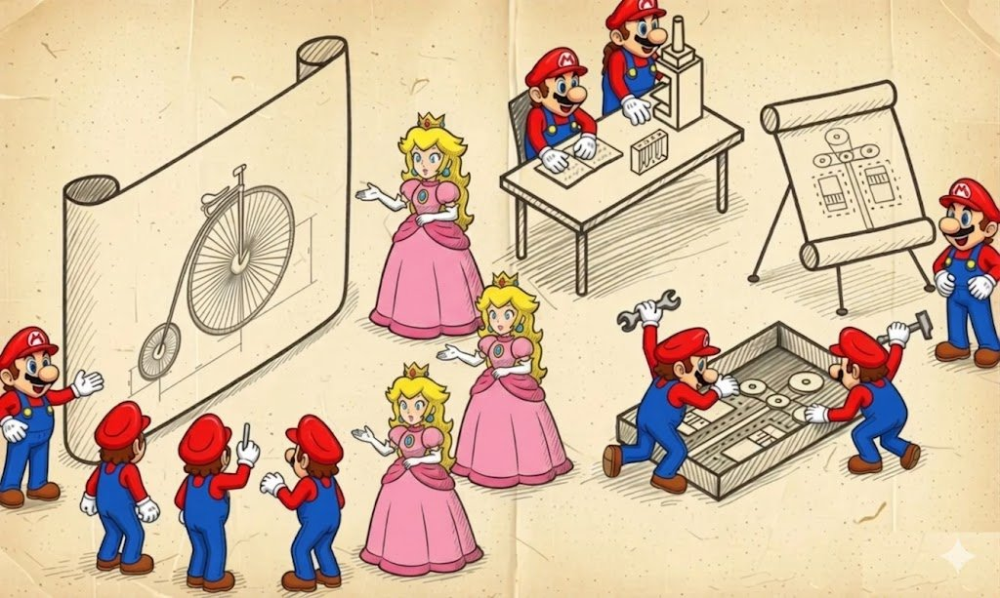
I have a book called Game++ and several articles where I went over which patterns are used in games and engines. The book devotes almost a hundred pages to these very patterns and describes in detail what kinds there are, how they look in C++, where their pitfalls are, and how to apply them. That is, exactly those implementation details that are usually worth re-reading when you once again decide whether to make a factory a separate class or try to get by with std::function. When I was writing it, it seemed to me that it would be a very useful practical text, and it turned out that way, and an experienced person finds what they need there fairly quickly.
But if you read the book as a whole rather than these separate chapters, you can clearly see how, with the inexperience and self-assurance of a young author, I jumped straight in and immediately started talking about implementations, as if the reader had already decided everything for themselves and was interested only in syntax — assuming that we're all building a conditional AAA engine here, in which serialization is inevitable and scripts are mandatory. The result is a classic case where the book answers the "how" but skips the "why," and without an answer to that, all the answers about "how" turn out either accidentally useful or systematically harmful, because a person takes an approach from there, drops it into their project or bolts it onto their mini-game, and then complains that they now have fifteen hundred lines of infrastructure for the same mini-game, which works exactly as before, only slower.
This article was born from an attempt to acknowledge and fix that mistake, and at the same time from yet another re-read of GoF, which I first saw as a student, and back then it seemed to me too abstract and not practical enough. And now I want to step back a couple of paces and walk this path properly, starting not with how a pattern is implemented but with what engineering problem it actually solves, and under what conditions it becomes either a project's salvation or an extra layer of abstraction that costs a lot and gives nothing.
If you suddenly get tired of reading these 106 minutes, there's a TL;DR section at the end with a brief summary.
Sections
Why we need patterns at all
Most conversations about patterns start with someone taking GoF, opening it at a random page, and saying that this <insert yours> is supposedly the one true way to make a factory or an observer, and then proceeds to discuss whether the method should be virtual or non-virtual, and if our compiler doesn't support reflection yet, how are we even going to live. This is very much like the situation where you buy a hammer at the hardware store and they explain to you at length and in detail exactly which nail in exactly which wood it works best with, without first clarifying whether you're building a house or a birdhouse.
The first danger of patterns is that in real life a pattern isn't the correct answer to what size of birdhouse we're building this time, but very much a technical compromise between several forces. These forces pull your architecture in different directions, and without such a compromise the architecture simply tears apart, and no patterns will help it anymore. The second is that when you read about "avoiding change" or "loose coupling," they're trying to sell you one side of the coin, and quite often they sell it, even though in your particular game it isn't needed at all.
These forces can be quite technical, like coupling versus cohesion, cache locality versus flexibility, header hell versus forward declaration, and a lot of other things that are described fairly well in textbooks. And there are organizational forces that textbooks say almost nothing about, and which in a real project turn out to be stronger than all the technical ones combined. For example, how many people you have, what their experience is, whether they negotiate easily, how often the game-design requirements will change, whether a localizer will come asking for Chinese, and how many times the tech lead will get to look at the engine code and want "this, only better."
When you choose a pattern, you're actually answering the question of exactly where you're willing to pay and with exactly what you'll be paying, and depending on the answer the right choice will be either a heavy data-driven design with header generation from a schema, or a flat thousand-line C++ file where everything is written by hand and just works. This is a rough simplification.
From this it becomes clear why questions like "which GUI architecture is best" or "what to choose, ECS or an object hierarchy" are technically meaningless, just like the word "universal" in an engine's description, because universality has a concrete price, and it's measured in megabytes of source, person-years of maintenance, and the number of games you didn't write. Tim Sweeney once expressed the idea that if you see a universal engine smaller than a hundred megabytes of source — roughly what Unreal weighs — walk right past it, because all the code that isn't written in a universal engine you'll have to write yourself.
On the other hand, that same Unreal Engine, which long ago exceeded the hundreds-of-megabytes mark, isn't universal either — it's built for quite specific genres with a specific simulation and replication model, and an attempt to build on it, say, an RTS at the level of StarCraft II with its particular synchronization rules ends either in rewriting half the engine or in moving to something else — but I certainly won't talk you out of trying.
It's very useful to keep in mind a few applied examples on which this idea becomes vivid. When id Software made the first DOOM, they had three programmers for all the core systems, one compiler, one target, and very clear hardware constraints. Any data-driven design with code generation from a schema would have been exactly the same overengineering for them, and so the sources contain dense, cache-optimized C code that's very hard to extend to anything else but easy to read.
At the time of DOOM, id Software wasn't "two people" but already an established company of 8 (Carmack, Romero, Hall, Petersen, two artists, a designer). "Two programmers" here is more of a legend that's often quoted, but that's really the Wolfenstein 3D (1992) story, when Carmack wrote the engine alone, with Romero helping.
The other side of the coin is BioWare, who fifteen years later were making Dragon Age. At that point they had four dozen game designers, localization into a dozen languages, and almost a hundred engine and game programmers, and the same C-code approach would have guaranteed to kill the project long before release. So the team first spent two years writing an editor, schemas, and serialization, paying tens of times more in infrastructure than id, but gaining the ability to hire designers who had never seen a single line of C code. Both teams made the right choice, while their choices are diametrically opposite, and that's normal too, because the projects' end goals were different.
So it's most useful to treat patterns not as recipes or a dictionary of spells you have to memorize and throw into code, but as an unfinished discussion, and precisely when you need to agree with a tech lead, with the architect of a neighboring subsystem, or with yourself in six months about exactly which compromise you chose and why, patterns start to save time and nerves. And instead of an hour of improvisation with a marker at the whiteboard you say "we have MVC here because the view gets rewritten more often than the model," and your interlocutor is entitled to agree and everyone goes for coffee on the terrace, or to object with arguments, and then the argument moves toward a decision rather than in circles. Everything else about patterns is already technical detail that depends heavily on the language, and that's what the rest is about.
Layers
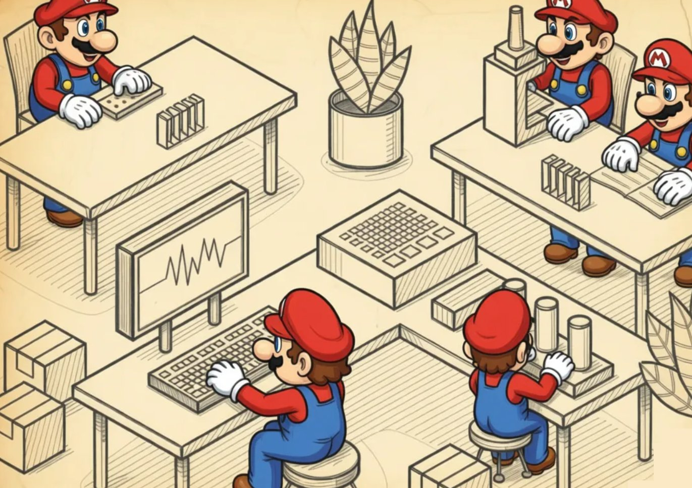
A layer isn't just a folder in the project or a built library, but a very concrete architectural promise the team makes to itself: "we agree that this code talks to the world only through this facade, uses nothing else, never peeks at anyone above itself, and if tomorrow we feel like throwing it out and rewriting it from scratch, we'll throw it out and rewrite it without warning anyone, because we owe no one anything except the facade."
Ideally you get the classic layer cake, in which each layer sees only the services of the one below it, and the result drawn on the whiteboard is a beautiful even vertical that people love to show at conferences, in books, and in meetings with investors.
+----------------------------------+
| Gameplay / Game Logic |
+----------------------------------+
| Replication / RPC |
+----------------------------------+
| Render Graph + Material | <-- pure layers
+----------------------------------+
| RHI (common facade over API) |
+----------------------------------+
| DirectX 12 / Vulkan / Metal |
+----------------------------------+
| Driver + GPU |
+----------------------------------+
^
| side utilities
| log, hash, allocator, mathIn real life this picture works in roughly the same percentage of cases as the IKEA picture of a finished kitchen, and layers are rarely applied correctly, because it's hard, expensive, and slow. You have to pay for the cake from the very first day, when you don't yet have a renderer, sound, or gameplay, but you're already having a multi-hour discussion about what exactly goes into the bottom layer's interface and who's going to code it.
But if you held that discussion and convinced everyone it's really needed, then in three years, when you need to switch the renderer from DirectX 11 to DirectX 12, or change the platform from PS4 to PS5, or throw out the network stack entirely and rewrite it on Apple's messages, you either just swap out one layer, or rewrite half the app exactly as before — but now aware that you're rewriting half the app, not "well, we'll tweak a couple of places."
The most common and still-living example of layers is any system API, and the OpenGL layer in apps is alive precisely because it's simple and couldn't care less whether you're rendering Crysis or a GIF player. The facade on the lower layer's side is arranged so that none of the upper ones leak into it, and Win32, POSIX, Vulkan, DirectX, the Wwise SDK, the Steamworks API, PlayStation libpad — all of these are layers in their purest form, which give you functions, types, and a promise that these functions work, and give no commitments to account for your architecture, your resource manager, or your DLC plans.
But when you write your own layer inside the game, the main success criterion becomes the ability to make sure nothing leaks down from above. If the lower layer knows anything about you besides the functions and types of its facade, you no longer have a layer but just two modules you quietly married off, but for some reason forgot to tell the rest of the team about.
Why layers are needed
The technical reasons for splitting a program into layers specifically are usually secondary, and organizational ones always come first. A layer is a way to hire a separate team for a specific piece of the system and not see them every day in meetings at the same table as the team of the neighboring layer, because both teams can work at very different paces.
Layers are useful when you have incompatible teams. For example, there's a layer that should be written by specialists from the render team, who know well what a GPU is, shaders, Vulkan barriers, and the pitfalls of resource binding. And a game-design layer that should be written by gameplay people, who understand well how a third-hit combo behaves if the player released the button on the second frame of the animation, and these two worlds rarely intersect at the level of people, while at the level of code their intersecting is categorically harmful. And for them GPU will mean Game Progression Update, or the game's progression curve.
There are technical bonuses too, and there are two and a half of them. The first gives the ability to replace a layer's implementation entirely — say, for a different graphics API, a different platform, or autotests with a mocked renderer. The second gives good bug localization, because if your layer is real and the facade is clean, a bug is either "above the facade" or "below the facade," and the search narrows by an order of magnitude. The half-bonus goes to compilation speed, because the facade header itself is small, while the heavy internal types are hidden in a lib you can rebuild as rarely as once a week.
Where layers break
The main trouble with layers is that layer N sees only layer N-1, and has not the slightest idea of the existence of layer N±2, and this, oddly enough, turns out to be a problem far more often than a feature. A classic example from real development looks roughly like this: you have an asset layer that caches loaded textures by file name, because it seems obvious to the asset-layer developer that textures might be requested again; there's a material layer on top of it that also caches textures, but by a unique GUID, because it seems obvious to the material developer that textures are identified by GUID; and there's a render layer even lower that also caches "hot" textures a little in its own structures, because the render developer didn't have time to figure out whether anyone above was caching them.
As a result the same 4K hero texture lives in memory in three copies, and none of the three authors does anything technically wrong from the standpoint of their own layer, until someone lands on a console with eight gigabytes of shared memory and hits an OOM on the starting location. But it's written nicely and within the pattern.
The second big problem of layers is so-called cross-cutting concerns. These are things like logging, profiling, the allocator, telemetry, and the string subsystem, which by their nature permeate everything, and any honest "a layer sees only the lower layer" applied to them looks like you needing to thread logger* and allocator* through all the boundaries as parameters.
In two months the project turns into a garland of four extra parameters in every function, after which the tech lead spits venom for a week and overnight makes a global g_logger, implementing yet another anti-pattern in the project — but in exchange working becomes twice as easy and fast.
Game examples of layers
Almost always a game's network stack on top of TCP/IP is the cleanest possible example of a layer cake, because in network code the exchange between layers physically goes in packets, and you can catch these packets in Wireshark, look at them, and confirm that the upper layer really knows nothing about the lower one except what the lower packet carries.
At the bottom we have IP, on top of it UDP with a couple of standard fields, on top of that the engine's reliable channel, which can resend lost packets and reassemble them in the right order (this is how it's done, for instance, in the Source Engine with its netchannels or in Unreal's NetDriver with its bunches), on top of it replication is wound, which turns "that player's HP changed" into "put four bytes into the packet at such-and-such offset and don't forget the delta with the previous tick," and on top of all this is the game logic, which knows only that the player has HP and doesn't suspect there are four floors of infrastructure beneath it.
Quake III at the time made exactly such a stack and published its sources, and to this day half of indie shooters draw inspiration from its netcode precisely because the layer separation there is very clean, and they can be ported to a new engine without understanding the internals of the lower levels.
The graphics stack is the same network cake, only ten times thicker. At the bottom we have the GPU driver, on top of it DirectX 12 or Vulkan with its API, on top of that they usually build a so-called RHI (Render Hardware Interface, a term from Unreal; in Frostbite it's called differently but means the same), which abstracts different graphics APIs behind a common facade; on top of the RHI lies the Render Graph (FrameGraph in Frostbite, RDG in Unreal, RenderGraph in Unity SRP), which builds a dependency graph between passes and places barriers and resource transitions itself, and on top of it is the material system and the high-level renderer, which can draw a model in the scene and knows nothing about "a resource barrier from COPY_DEST to SHADER_RESOURCE."
Each boundary in this tower is a real layer, so when Epic one fine day renamed their Render Graph and changed half its API, the upper layers survived it, because they worked through the facade rather than through direct access to the internals. And conversely, engines in which gameplay code somehow manages to know about ID3D12CommandList are usually rewritten entirely when changing the graphics API, and take much longer than planned.
The audio stack is arranged very similarly, because its tasks are the same. High-level events like "a pistol fired near the player" need to be turned into concrete samples, run through a DSP chain, mixed with a dozen other sounds, and sent to a specific hardware buffer of the OS. Wwise, FMOD, Audiokinetic — under the hood they all decompose into their own internal layers, which have Events at the very top, Sound Banks below them, Mixer and Bus Routing a level lower, a DSP graph even lower, and WASAPI on Windows, CoreAudio on macOS, and some AudioRenderer on consoles at the very bottom, while your gameplay code talks strictly to the top layer, sending PostEvent("Wpn_Pistol_Fire"), completely unaware of how many filters and buses this call will pass through.
id Tech 4 (Doom 3, 2004) is probably the clearest textbook example of a layered engine, because when Carmack released its sources, anyone could see there a physical split into sys, renderer, framework, idlib, and game, where game.dll is built as a separate DLL, doesn't link with the renderer directly, knows nothing about OpenGL, and talks to the world through the idGameLocal interface and a handful of callbacks. That's why modders at the time made total conversions of the game without touching a line of engine code.
That same Source Engine also looks layered on paper, but if you look at the real code, there are many places where client.dll unexpectedly knows a lot about the material system and vertex formats. It yields to modders less willingly for exactly the reason that layers are a contract, and you only need to start quietly violating it once for layers to eventually leave behind only source files with meaningful names.
When layers shouldn't be used
Layers work very poorly on three types of projects — here I lean on my own bruises. First, on small projects of one or two people, where designing layers will eat so much time that you won't write the game this quarter, and maybe not the next, and in this case a "fat" main.cpp with direct calls to the renderer and sound will be exactly the right decision that lets you reach release, and only then grieve that the code became unreadable.
Second, on projects with a very high rate of requirement changes — for example, early gameplay prototypes where the game designer changes the combat rules every week, and any "contracts between layers" get rewritten exactly when the rules change, and layers in this case turn out to be a form of bureaucracy that slows iteration.
Third, on any systems where different "layers" physically must communicate with the same resource without copies or intermediaries, such as between physics simulation and skeletal animation, between the ECS world and the AI planner, between the renderer and asset streaming. There, an attempt to hide one from another behind a facade usually yields either a ton of copying, or very expensive calls, or both at once.
So, when choosing layers as your main means of organizing code, it's reasonable to immediately ask yourself three questions: can you spend a noticeable part of the first months' budget designing interfaces before you see the first frame of the game? are you ready to keep the discipline "layer N+1 knows nothing about layer N+2" in the team over a horizon of at least a year? is there a chance to get a payoff from this architecture that justifies its cost?
If the chance is there and the team is ready, layers pay off very well, and if not, you'll build a beautiful layered tower in which the game designer starts drilling holes shouting "I urgently need direct access to the renderer," and from these holes a unitary architecture you never planned gradually grows. There's more about unitary architecture in the book, but I think you can get the general impression from the article too.
Metalayers
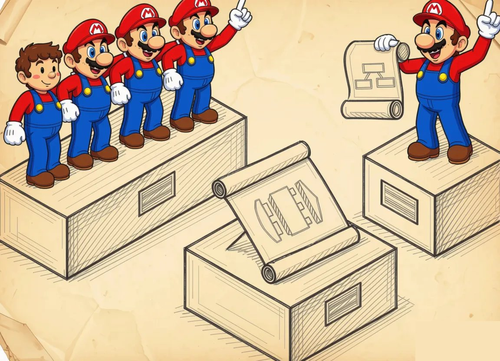
If a layer is the contract "I talk to the world only through a facade," then a metalayer is already the contract "I don't just talk, I formulate my intentions to you in your own language, and you yourself decide exactly how to carry them out."
A metalayer usually sits between a real layer and a pipe (a channel), because from the outside it looks like a layer and uses the same facade, but inside it's arranged differently. Now the code no longer calls functions one by one hoping the lower layer will honestly execute them in the same order, but assembles a declarative description of what it wants to achieve, hands this description to the metalayer as a whole, and the metalayer then translates the description into a sequence of lower-API calls — most often not in the sequence in which the description was written, but in the one that's more advantageous in performance, memory, synchronization, or anything else the metalayer knows how to optimize.
This is especially visible in Naughty Dog's engines and their DSL called GOAL (Game Oriented Assembly LISP) on early PlayStations, which by the time of The Last of Us had turned into the more modest but architecturally similar DC (Data Compiler), and in both cases the gameplay code of Crash Bandicoot or Uncharted isn't C functions like most people have, but Lisp-like expressions that compile into their own bytecode and are played back by a virtual machine on top of the ordinary engine layer.
This is probably the most vivid example of how a metalayer isn't an "abstraction" but a full-fledged second programming language inside the project, with its own parser, compiler, optimizer, and runtime, and keeping such a menagerie makes sense exactly when you're making not one game but a series, in which the years saved on game designers' iterations pay back the infrastructure investment.
What a metalayer actually gives, and what you'll pay for it
The main payoff of a metalayer, besides speed and optimizations as such, is that you get a separate system you can save, version, diff, and validate even before the game starts at all. And that same render graph can be dumped to JSON and compared between builds, a material can be opened in the editor and you can see what changed since yesterday, and a behavior tree (BT) can be run through a hundred navigation tests, and each of these actions is impossible for an ordinary layer in which there's just a function call between "top" and "bottom."
On big projects this ability to build separately, save separately, and check separately turns out to be more important than all the optimizations combined, because it's exactly what lets 30 technical artists and 10 AI programmers work on the game in parallel and not collide in some bugs 200 times a week.
You'll have to pay for it too, and the metalayer's price is rather characteristic. There's always some delay between "changed the declaration" and "saw the result," because between them stands a compiler or scheduler, so you have to bolt on hot reloading of the metalayer in parallel (Hot reload, Unreal Live Coding, Unity hot reload, Niagara on-the-fly compile) or live with long iteration cycles and quietly hate your pipeline.
Debugging a metalayer is an order of magnitude harder than an ordinary one, because when an error occurred in the lower API, the path back to the line in the description goes through a chain of translations, and without good tools like RenderDoc or a built-in Behavior Tree debugger, the investigation turns into reading coffee grounds.
Metalayers love to grow toward full-fledged programming languages, and at some point the Material Editor acquires a Custom HLSL Node, the Behavior Tree gets a Composite Decorator with arbitrary C++ code, and the Render Graph learns to accept "callable passes" with, again, arbitrary code inside. At this point it's worth honestly telling yourself that your metalayer has become a DSL (Domain Specific Language), documenting it as a language and treating it as a language rather than as a set of "nodes in a graph."
Declaration (graph, tree, material)
|
v
+------------------+--------------------+
| Metalayer: |
| parse -> validate -> analyze -> | <-- the compiler and/or
| schedule -> codegen | scheduler live here
+------------------+--------------------+
|
v
Lower-layer commands
(DX12/Vulkan, HLSL,
compute program, AI Task)If we try to formulate a practical rule, it sounds like this: a metalayer is worth making when your project has a separate group of people who will work on it daily, and at the same time the lower layer is complex enough that naive call generation on each such edit would give a poor result either in performance, or in correctness, or in the amount of manual work, or in something else.
If the first condition isn't met, the metalayer will be written and maintained by exactly the same person who would have written direct calls anyway, and the metalayer will only be a burden to them. If the second isn't met, your metalayer will be a very expensive way to stuff simple code into a graph because it's pretty and can be shown at a conference.
But if both conditions are met — and such projects in the modern industry are more the rule than the exception — a metalayer fairly quickly becomes the place where both the engine's main optimizations and the content team's main productivity are concentrated at once, and a tech lead who managed to sell, build, and ship such a metalayer can usually safely go ask for the next achievement on their profile, and maybe a few more dead raccoons.
Subsystems
If layers rarely come out well, or come out heavy, the opposite can be said about subsystems. This is the typical choice when you're prepared in advance to trade purity for lower risk, and that's how the absolute majority of engines actually alive today are arranged, from small to large.
A subsystem looks very much like a layer from the outside — it also has its own code, its conditional facade, and its responsibility — but whereas layers draw on the whiteboard a neat vertical tower with cleanly drawn boundaries, subsystems on the same board come out as a heap of little circles with arrows, and these arrows fly in different directions, because the renderer wants to know from physics which objects are alive now, physics wants to know from animation which bones moved where, and animation wants to know from AI which direction the fighter is going. AI shouldn't, but very much wants to ask the renderer whether the camera currently sees that monster, in order to decide whether it's even worth launching the expensive visibility-check logic with raycasts.
The main difference between a layer and a subsystem isn't that one is better than the other, but that subsystem boundaries are acknowledged by all participants in advance as leaky. A layer is the contract "you don't see me, I don't see you, we talk through the facade," while a subsystem is the contract "we're forced to communicate often, for all kinds of reasons and in both directions, so let's at least agree on who calls whom how and what objects fly between us."
So when you make a layer, you spend two weeks designing the facade, and then for two years you defend that facade so no one extra crawls through it. When you make a subsystem, you spend two days on its first interface, and then for two years you tweak that interface as the game designer comes up with new reasons for your AI to talk to your sound, and that's part of the price for lower risk at the start.
Why subsystems at all, if layers are cleaner?
Because in a real game the communication between potential "layers" is so dense that hiding it behind a vertical hierarchy with facades is either physically impossible or so expensive that the game won't make it to release. When the renderer every frame has to walk the scene, ask physics for the bounding box of each dynamic object, feel out the bone matrices for skinning from animation, and also find out from the LOD manager which mesh is currently active, and do all this in one and a half milliseconds to hand the frame to the GPU in time, any attempt to hide a neighbor behind a heavy facade with virtual calls and type conversions turns 1.5 ms into 4.5, and you spend half the frame on the mere fact that you organized your code nicely.
So subsystems appear not out of a love of purity but out of the recognition that a game has a set of large modules, each of which lives its own life, is maintained by a separate team, is profiled separately, has its own data structures and its own optimization plans, but at the same time they're forced to constantly exchange information about a big and shared world.
The only sensible way to organize this is to separate these modules into subsystems and allow them to know about each other, focusing efforts not on isolation but on minimizing the number and cost of their interactions.
What is usually called a subsystem, and what isn't
On paper a subsystem is usually a fairly large module that owns some substantial piece of game state (the renderer owns the scene, physics owns the physical world, AI owns its planner and blackboard). It also has its own regular update loop, called from the main game loop per tick or per fixed step, and has an external API more or less independent of the internal data structures.
If you have code that doesn't own its own state and has no regular tick, it's most likely not a subsystem but either a utility library or a set of helpers. Properly it should be moved into tools and not waved around as an architectural achievement.
A typical set of subsystems in a modern engine looks roughly like this: Renderer, Physics, Animation, AI, Audio, Streaming, ResourceManager, Input, Network, UI, and on top of all this World/Scene, which is usually not a subsystem in the pure sense but rather a shared object that all these subsystems know and can address.
Between subsystems fly game-world entities, most often as pointers or handles, and depending on the engine's style this is either a GameObject with components à la Unity, or an Actor with components à la Unreal, or an Entity without behavior but with a set of tags and components à la ECS, and the architectural choice of this "shared object" largely determines how comfortable the subsystems' life next to each other will be.
The Source Engine as a model example of subsystems
Valve's Source Engine is probably the most academic example of an engine organized precisely as a set of subsystems, because Valve physically separated these subsystems into individual DLLs, and any subsystem in Source is an IFooSystem* obtained through a special factory mechanism at engine load time.
Specifically they have studiorender.dll for model rendering with the IStudioRender interface, vphysics.dll for physics with the IPhysics interface, soundemittersystem.dll for abstracting game sounds over IEngineSound, materialsystem.dll for materials, vgui2.dll for the UI, and a dozen others, and each DLL at load gets a function CreateInterface(const char* name, int* return_code), through which engine.dll requests implementations from it, while the DLL itself through the same function requests from the engine implementations of other subsystems.
This scheme is wonderful in that one fine day Valve were able to move from the Half-Life 1 GoldSrc engine to Source without rewriting the whole game, and on another fine day they were able to swap physics from their own home-grown one to Havok's vphysics, and on a third fine day they were able to add new render types without touching the interface of the old one, and the modding community gained the ability to write their own mod DLLs.
It was paid for at a known price, and those who've ever looked into the SDK sources know that calling even one simple function in a neighboring subsystem is a virtual call through an interface, which in total over a frame adds up to not the smallest overhead.
CryEngine and big windows into subsystems
CryEngine went a similar way but took the other extreme: instead of a handful of small DLLs with small interfaces, Crytek made fewer DLLs, but each got a huge, flat interface with dozens of methods exposed. I3DEngine is the whole renderer plus the scene plus vegetation plus the ocean plus terrain, IPhysicalWorld is all of physics with its Vehicles, Particles, Cloth, and Ropes, ICharacterManager is all of animation and the skeletal mechanism, IAISystem is all of AI, and so on and so forth, and any code in the game that needs to do something with any of these subsystems does gEnv->p3DEngine->FuncName(...), which instantly turns gEnv into a god object through which you can reach anything from any point in the code, and Crytek honestly admit this in the documentation.
This decision also has logic behind it, because it greatly lowers the entry threshold for a newcomer who came from the mod scene or from indie and wants to "just make that object glow green" and doesn't want to figure out factories, factory factories, and dependency injection.
But the same decision's price is that inside I3DEngine, over fifteen years, so many methods accumulated that hidden connections appeared between them, not expressed in the interface, and anyone who tried to do something on CryEngine knows that if you touch one parameter in a function, after a while you discover you've changed the behavior of vegetation in fog at sunset, because these pieces of code implicitly shared a global cache.
Unreal and batch mutation: subsystems as an explicit engine entity
Unreal Engine for a long time lived with a very specific model in which the role of subsystems was played by UEngine, UWorld, UGameInstance, and UGameViewportClient, that is, several large objects that everyone else reached through static getters or a pointer to the world, and this worked but scaled poorly when adding new code.
So starting with UE 4.22 Epic added an explicit USubsystem mechanism to the engine, which has several subtypes: UEngineSubsystem lives for the whole lifetime of the process, UGameInstanceSubsystem lives while the game session is running, UWorldSubsystem lives while the world exists, and ULocalPlayerSubsystem lives while the local player exists, and they're all retrieved by the same templated GetSubsystem() call from the corresponding owner. This is a very telling decision, because Epic effectively took the recognizable pattern "a subsystem as an object living its own life with a declared lifetime" and built it into code generation, reflection, and the editor, after which any gameplay-code developer could declare their own subsystems in a couple of lines without digging into the engine's guts, while the engine in exchange gained the ability to manage their lifetimes automatically.
Under the hood it's still a heap of circles with arrows, because Unreal's subsystems see each other through the same GetSubsystem lookups, but from the outside at least some discipline appeared, and that's a rare and pleasant phenomenon for the industry, when a big company does something not for a pretty GDC slide but to reduce the number of foot-shots among gameplay developers.
Unity, Bevy, DOTS: a subsystem as a "system" in ECS
Last-generation ECS engines almost literally raised the notion of a subsystem to the main architectural primitive, and in Unity DOTS, in Bevy, and in EnTT-based engines a subsystem means exactly what's called System in code, that is, a piece of code that on each tick runs over the components of a certain set of types and does something with them.
Between ECS systems objects don't circulate as independent entities with behavior, but lie in a shared World, and each system gets access to them; as a result the pattern comes out the same as in Source and CryEngine, only moved to a different level of abstraction, more like working with a database.
From an architectural standpoint it's interesting here that subsystem boundaries became even more explicit because data access goes through a single world manager, and at the same time all the same logic about "they know about each other" is preserved, because the movement system wants data from the navigation system, the render system wants the results of the animation system, and so on. Just instead of IFooSystem* or gEnv->pFooBar the code has a component query like Query<&Position, &Velocity>, and instead of manually calling neighbors' methods there's implicit synchronization through a dispatcher, which itself decides in what order to run the systems and which of them can be run in parallel.
How subsystems usually communicate
Subsystems don't have many ways of communicating, and each of them also has its price. The first and most obvious is a direct call through a neighbor's interface, and absolutely everyone uses it because it's the most understandable and easily debugged. The price for this is rigid coupling, and if subsystem A calls subsystem B directly, then throwing B out or replacing it with something else is already painful.
The second is a shared game-world object through which subsystems exchange state without calling each other, just reading and writing entity data. Now the renderer doesn't call animation but reads its skinning matrices from the Entity, animation doesn't call physics but reads the position from the transform, and so on, and this reduces the number of direct calls but in exchange sharply increases the complexity of the data-coherence model, because now you have to answer the question "when whose data is current, who overwrote whose, and in which tick it happened."
The third way is messages and events, from simple signals à la Qt/UE Multicast Delegate to full-fledged event buses with a queue and priorities, and they work well for rare asynchronous interactions like "the player died, broadcast a notification to everyone," but work poorly for frequent regular ticks, because they add a one-frame delay and lose locality.
The fourth and most insidious is the Service Locator, that is, a global registry of services from which any code can get any subsystem by name or by type, and the Service Locator is convenient at the start of a project but has a very bad habit of turning into yet another god object with a couple hundred registered "services," and at this moment you quietly rediscover for yourself exactly that gEnv from CryEngine, only in a form you grew yourself and about which you previously thought it surely wouldn't happen to you.
Where subsystems break
There are three main problems, but each of them comes with time. The first is cyclic dependencies, because subsystems by definition know about each other, and in a year it turns out that AI reads camera visibility from the renderer, while the renderer reads LOD-selection priorities from AI, and when trying to split either of these two subsystems into a separate DLL you get a circular include or a linker complaining about cyclic symbol dependencies. On paper this is all solved by extracting common interfaces into a separate module or introducing an intermediary, but in practice it's a painful multi-week refactor that never gets priority, because the current architecture "sort of works."
The second problem is the growth in the number of god objects, which you can see both at Crytek with their gEnv and in a heap of home-grown engines in which a class Game, or World, or Engine appears that owns all the subsystems, and through it any code can reach any subsystem. At first this is very convenient, until the question arises of how to test one subsystem without twenty neighbors, or how to parallelize the update across cores without getting data races.
The third problem is overhead, and not so much on the virtual call itself as on crossing the CPU cache boundary and working with pointers. When subsystem A calls in subsystem B a function that internally goes for data into subsystem C, we get a cache miss at address B, then another at address C, then another on the data C points to, and with a sufficient number of such crossings per frame you get a whopping frame budget quietly spread across systems.
When to choose subsystems as your main means of organization
On a horizon of more than one or two people, subsystems are a reasonable decision, since they give division of labor and relatively understandable modularity without the human cost required for strict layers, and most engines on which you've seen working games are organized exactly this way.
And if layers are reasonably applied where you already have a stable, not-too-often-changing foundation — for example your own HAL over platform APIs or your own facade over Vulkan — and where you're consciously ready to pay extra discipline for the ability to someday replace the implementation, then subsystems are worth choosing when you have several large modules with their own state and their own update loop, with inevitably frequent interaction between them, and the team is ready from the start to agree on interfaces not as inviolable contracts but as a living document refined once a sprint based on meeting outcomes.
In parallel with this it's worth immediately deciding: what will your shared game-entity object be? how exactly does a subsystem find a neighbor (factory, locator, a direct pointer from the constructor, registration in a registry)? and who calls their ticks, and in what order?
These three questions determine half the engine's architecture and spare the team a great many troubles down the line. Or they later turn into those very multi-year refactors that I wish on none of my colleagues.
+----------------+
| World |
| (game entities,|
| general state)|
+-------+--------+
|
+----------+------------+------------+----------+
| | | | |
+---v---+ +---v----+ +----v----+ +----v----+ +---v---+
|Render | |Physics | |Animation| | AI | | Audio |
+---+---+ +---+----+ +----+----+ +----+----+ +---+---+
^ ^ ^ ^ ^
| | | | |
+----------+------+-----+------+-----+---------+
| |
Streaming ResourceManager
arrows go in both directions
subsystems see each other
the shared world object holds the entities they jointly
read and write
utilities (log/hash/allocator/math) hang on the side and are available to allThe main thing to keep in mind after all this analysis: subsystems aren't small, neatly isolated bricks, as people sometimes try to portray in lectures, but large, more or less independent blocks, each with its own interests and its own state, and subsystem architecture is a separate attempt to organize their shared life so they bring each other more benefit than trouble.
If you succeeded, you have on the board that very "heap of circles with arrows," and it's good precisely because it reflects the real physics of game code, in which data flows not top-down along a beautiful tower but in all directions at once, and the architect who accepted this ends up with a working engine, while the architect who keeps drawing verticals usually ends up with either a beautiful slide presentation or a very expensive refactor in the third year of development.
The pipeline (Pipes & Filters)
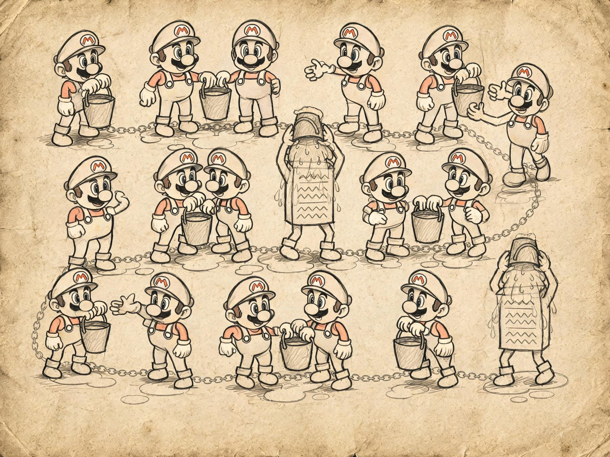
If a layer is more about a facade and the lower levels of a system, and a metalayer is about descriptions and structures, then pipes and filters are already mechanics: "I just take data at the input, do something with it, and put the result at the output, and who picks it up next and where they carry it is not my problem."
Each filter here is a small utility/code/logic with a clear signature "takes this, gives that." Such utilities can be assembled into a chain or a graph, and on top of them there's usually some orchestrator like nmake, Jam, Bazel, a build farm, or the engine's internal task runner, which decides in what order to run the specific links.
Ideally we get a set of small combinable utilities that "by their flexibility and composability will solve any task," because a pipeline has a property completely separate from layers and subsystems — that you can poke it by hand, reorder it, insert a new filter in the middle, and understand what came out, without rebuilding the whole game.
A pipeline is usually used as a mechanism for building and processing data, feeling great here, because data usually flows in one direction, and mutable state between filters is either absent altogether or has yet another small filter written to handle it.
People also try to use a pipeline as a means of processing game messages or as a full-fledged runtime architecture, but I've almost never seen cases where pipes/filters made a normal architecture. The reason for this is purely practical, because the runtime doesn't like "everything fell apart, let's roll back," it just needs to finish drawing the frame, while a pipeline by design has no normal error handling, and a filter that saw broken data will either pass it on with an error or hand out something strange entirely, and any of these options in the runtime means either a crashed frame, or an invisible hero, or a strange effect.
Offline content building
The most common and still-living place for pipelines in games is asset building of the form create_normal_map(highpoly.max, lowpoly.max, 666, …), which is interpreted as a mix of the instruction "take these two files, run them through the bake_normal_map utility, and put the result under such-and-such name."
In modern form this same idea unfolded into full-fledged systems like UnrealBuildTool + AutomationTool in Unreal, AssetImporter + AssetPostprocessor + the Addressables Build Pipeline in Unity, the Frostbite Build Farm at EA Dice, Houdini Engine + PDG (Procedural Dependency Graph) for procedural generation, and home-grown systems at Naughty Dog, Rockstar, Guerrilla, and everyone else with the resources to make their own.
Architecturally these systems are arranged as a set of small importers and cookers, each of which can convert one input type into one or more output types; there's a dependency graph between assets, built from metadata and from the importers' own declarations; and there's a scheduler that looks at the modification dates of inputs and decides which links to recompute and which can be fetched from a cache, local or networked.
When an artist in Maya saves Hero_LOD0.fbx, the system fires a chain like "fbx parser → mesh extractor → tangent generator → vertex format packer → cooked .uasset," in parallel with it "fbx parser → skeleton extractor → animation clip → compressor → cooked skeletal animation," and there can be a dozen such parallel chains for a single source model, and this whole menagerie is processed either by the developer's local build or by a farm that overnight recomputes everything that changed during the day.
Pipelines are used almost everywhere for building shaders, because the same source material in Unreal or Unity produces tens of thousands of shader variants at the output, each of which is a separate artifact with its own dependencies on platform, quality, feature level, and texture settings.
If this were all computed as a monolith, any edit to a trivial material would recompute everything from scratch for several hours, but thanks to shader building being made as a pipeline with dependencies and a cache, the real rebuild after editing one parameter takes seconds on a developer's machine and minutes on CI.
You pay for this in error triage when something breaks in the middle of the pipeline. Then the developer gets a vague log like "cook failed for asset X at stage Y," and is then left to figure out on their own exactly which filter failed and why, because a pipeline has no normal call stack, it has only a chain of ten utilities, each of which logs something in its own way.
In a large studio there's usually a dedicated person whose job is to keep this very debugging infrastructure around the pipeline alive, because without it artists come to programmers every thirty minutes with "my d... thing won't build again."
DSP graphs in audio
With audio the story is exactly the same as with asset building, and here the pipeline achieved what can hardly be achieved anywhere else, namely full-fledged life at runtime on tens of millions of devices. FMOD Studio, Wwise, Unreal MetaSounds, Unity Audio Mixer — they're all built around a DSP graph, in which the sound source is the very first filter (a sampler from memory, or a streaming decoder, or a synthesizer generator), then come per-channel DSP effects like low-pass, high-pass, distortion, reverb, occlusion, pitch shift, send/return buses, then the master bus, and at the very end the hardware output.
Each link is its own little filter with a clear input and output of a sample array, the orchestrator is the audio engine, which every N milliseconds assembles a new block and pulls it through the graph. The pipeline here works at runtime precisely because audio, unlike render and gameplay, has two features. First, the data flow is guaranteed to go in one direction, and there's practically no feedback between "where to write" and "where to read," because you can't listen to a sound that hasn't played yet. Second, an error in one filter at worst means "this track will sound off or go silent," and that's of course unpleasant for the player, but it's not a crashed frame or an invisible character, so a pipeline with its weak error handling lives here calmly. And third, the sound designer absolutely needs the ability to swap or add an effect at any point in the graph, because that's the whole point of their profession, and an audio system that doesn't allow this earns the sound people's active hatred and gets quickly replaced by one that does.
The post-process stack and the render pipeline
In graphics the pipeline lives as post-process chains, and this is probably the most visually familiar place for a beginner developer. Unity URP/HDRP calls it Volume Profile + Post Process Stack, Unreal calls it Post Process Volume, Godot has its own WorldEnvironment, Frostbite and id Tech have their own internal names, but architecturally it's the same thing everywhere.
After the renderer assembles the scene, a chain of filters begins like "motion vectors → TAA or DLSS or FSR → SSAO/GTAO → SSR → bloom → depth of field → exposure → tonemap → color grading → film grain → vignette → final blit," in which each filter is a separate compute or screen shader consuming one or more targets and writing to another, and whoever sets up the scene can enable, disable, and reorder these filters through the UI without touching engine code.
It works at runtime too because it meets the same criteria as audio. Data goes one direction, an error means "the frame computed wrong, but the frame computed," and the graphics artist must be able to poke at these effects by hand without calling a programmer.
When you see in a release "wow, a new trailer, they added a cool dust-in-the-air effect," then most likely no programmer did anything specifically for that effect this month, the render designer just finally turned on fog volume + dust particles + bloom or swapped a couple of filters and recorded the result.
Very often a pipeline is embedded into a metalayer, and the Render Graph in Unreal or FrameGraph in Frostbite is a metalayer that takes a frame declaration and rebuilds it into an optimal sequence for the pipeline. That is, it forms an optimal sequence of filters and passes with dependencies, and it turns out that a pipeline rarely lives on its own and is more often hidden under one or two metalayers that handle the declarative input, while the pipeline handles execution. This is the right distribution of responsibility, because the declarative input gives a clear model to content authors, and the pipeline gives a clear model to engineers.
Where the pipeline breaks
The pipeline's main weakness is error handling, and it shows up on several sides at once. There's the loss of context, when a filter in the middle of the chain gets "broken data" and physically doesn't know who broke it and where and what to do about it, and all it can report is "input is invalid," but "input is invalid" in a build-farm log means about as much to an artist as the phrase "nothing compiles, nothing at all" means to a programmer.
There's also the absence of transactions, and if the pipeline built a level for 4 hours and crashed at stage 18 of 20, you have on disk a set of partially generated files that formally exist but are semantically invalid, and you can throw the 4 hours in the trash.
And finally there's debugging long chains. The more filters you have between input and output, the harder it is to understand at which exact stage the data started to differ from the expected, and any serious build infrastructure at some point acquires a separate system for tracing artifacts through all stages with dumps of intermediate results to disk, and this system usually lives with a separate team and is funded separately.
A separate feature is state that doesn't fit into a filter. A pipeline copes wonderfully with tasks where each link is a pure function of the input, but as soon as global state appears in the system that different filters must read or write (for example, a shared allocator, a shared time counter, a shared log, a shared dedup hash), the pipeline either starts dragging this state through all the filters as an explicit parameter, or you have to introduce global variables, and in both cases the beautiful model of "independent links" turns into "links that know about each other through a black box."
When to take pipes/filters
Architecturally a pipeline is good exactly when you have a task with a unidirectional data flow in which the links can be described as "input of type A, output of type B," and at the same time an error in the middle is either "stop and complain to a human" or "throw out the result and try again," but never "we need to somehow carefully keep working."
If these conditions are met, a pipeline gives the industry's best division of labor among the authors of different stages, fits perfectly into caching and distributed building, and is easily extended to new input and output types. That's exactly why it lives where it lives, that is, in asset building, level baking, offline texture processing, and non-realtime pipelines like Houdini and Substance.
But if the conditions aren't met, and you have feedback, state dependence, or a requirement to "keep living after an error," the pipeline will either start accreting crutches like buses for context, or turn into a subsystem with a pipeline-like API. But that will no longer be pipes/filters but something else, and it should be treated as something else, and perhaps a metalayer or a subsystem is needed, and an attempt to stretch pipes/filters onto that task will still end with having to throw everything out and write it anew.
.fbx .png .max .wav .ttf
| | | | |
v v v v v
+------+ +-----+ +-----+ +-----+
|fbx | |png | |max | |wav | <-- importers,
|->mesh| |->tex| |->geo| |->snd| each on its own
+--+---+ +--+--+ +--+--+ +--+--+
| | | |
v v v v
+-------------+ +-------------+
| tangent gen | | compression |
+------+------+ +------+------+
| |
v v
+----------------+ +-------------+
| vertex packer | | texture |
| + LOD chain | | block comp |
+-------+--------+ +------+------+
| |
+--------+----------+
v
+-------------+
| cooker | <-- final cooker
| .uasset/ | of level artifacts
| .pak/.iostore|
+------+------+
v
runtime buildIf we try to formulate a practical rule of application, a pipeline of filters is the cheapest architectural construct in terms of mental load that exists, and at the same time the most dangerous when you try to step outside its comfort zone.
In the comfort zone, that is, in asset building, offline processing, audio DSP, and post-process chains, it works almost for free, and any engine that tries to get by here without a pipeline looks strange and runs slowly.
Outside the comfort zone, that is, in game-message processing, in runtime gameplay logic, and in combat systems, attempts to build a pipeline of filters end roughly the same way — crawling back into subsystems, and the only reason I repeat this after twenty years is that a fresh developer with a shiny new idea "let's make the whole game a Reactive Stream" appears in the industry about once every couple of months.
Microkernel
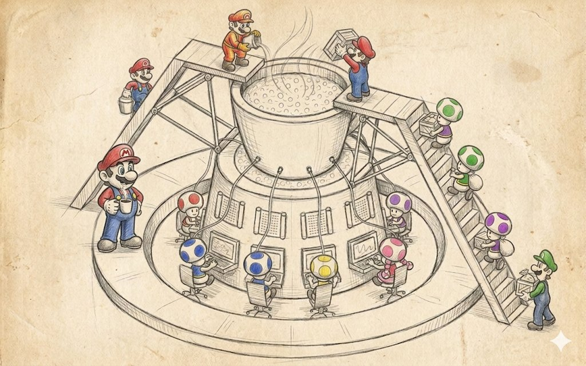
This is perhaps the most often misunderstood of the "big" patterns, because in textbooks it's usually drawn as "a small neat core in the center and a multitude of tidy modules around it," and from this picture the reader gets the pleasant illusion that the microkernel is about beauty and correctness rather than about something applied.
In reality this picture hides a much more interesting idea, that the microkernel is akin to the contract "I don't know and don't want to know exactly which pieces of functionality I'll have on this project." Textbooks describe the microkernel as a way of building an extensible system by separating a set of simple mechanisms for building and using interfaces.
Plugins in most engines are an almost correct application of this pattern. If we try to distinguish the microkernel from layers and subsystems, we get that layers have a vertical tower, subsystems a horizontal scattering of circles with arrows, while the microkernel has a big circle in the center, around it smaller extension circles stick out radially, and into each extension circle one or several plugins can come.
Moreover, plugins aren't obliged to know about each other, the core isn't obliged to know in advance exactly what will be plugged into it, and the set of plugins itself can differ from launch to launch. This is a completely different level of flexibility than layers and subsystems, because layers protect you from changes in implementation, subsystems protect from the team's growth in numbers, and the microkernel protects from the fact that you don't know the full list of features in advance, but expect that some of them will appear after release, come from modders, or be enabled by subscription.
How a microkernel differs from just a DLL and just a plugin
Any system that has dynamic library loading has a chance of being called "plugin-based," but that's not yet a microkernel, and here you have to remember four distinguishing features.
First, the core declares a minimal, stable, versioned interface of extension points that doesn't change without serious reasons, because any change to it breaks all existing plugins at once. Second, the core knows nothing about specific plugins, and in particular doesn't hardwire their names and types into its code, but gets information about them through a standard discovery mechanism, usually scanning a folder on disk, reading a manifest, registering in a registry, or calling an exported function like CreateInterface. Third, plugins must die without consequences for the core, that is, unloading a plugin or its crash mustn't destroy the main execution thread, and for this the core keeps isolation mechanisms around plugins, from just try/catch and nulling pointers to sandbox processes with IPC. And finally, plugins don't depend on each other, and any communication between them goes through the core or through the core's standard services, because otherwise the very idea of "a small core plus independent extensions" turns, by the very first release, into ordinary subsystems with a global registry.
These four features are rarely all met at once, and real game engines usually give you three and a half out of four, because almost everyone who claims to have a microkernel in practice cheats on at least one of the four points, most often the first, allowing themselves to break the ABI between major versions, or the fourth, allowing plugins to go to each other directly through type casts and names.
Where a microkernel lives in real games
The clearest game template of a microkernel is a game's virtual file system on top of pak files, and here this pattern lives exactly as described in the textbook. The VFS core declares a very narrow interface like IFileSystem with a couple of methods Open(path) -> IFile*, Exists(path), Mount(point, provider), and under this interface different providers can register.
One works with the OS's real file system, another can read from .pak (like Quake), a third from .vpk (Valve, Source Engine), a fourth from .pak-chunks of iostore (Unreal Engine 5), a fifth from .bsa and .ba2 (Bethesda), a sixth from .npk (Quake), a seventh from memory, an eighth from network storage, and so on. From the gameplay code's standpoint it's all the same Open("textures/hero_d.tga"), and from the VFS's standpoint it's a lookup in the provider registry and delegation of the request to the right one, and the player never breaks their legs on the thousands of small files inside one big archive, because the archive is transparent to them.
This scheme turned out so convenient that it took root in most engines, starting with Quake in 1996, which invented .pak, then Half-Life in 1998, which made .wad/.pak, and it flourished in the Source Engine, which brought the idea to .vpk with chunk splitting and the ability to overlay several archives with priorities and patches. In each case the core is the VFS manager, the plugins are provider modules for specific formats, and the modding community gets a huge bonus in the form of adding new archive formats that don't require editing the engine.
Unreal as a double microkernel
Unreal Engine is a separate interesting case, because it has a microkernel on two levels at once, but they're responsible for different things. The lower core, let's call it that, is a modular system based on IModuleInterface and .Build.cs, in which the whole engine is cut into hundreds of modules (Core, CoreUObject, Engine, RenderCore, RHI, Renderer, SlateCore, Slate, UMG, OnlineSubsystem, and dozens of others). Each of the lower core's modules is compiled as a separate artifact and connected to the core through a single mechanism.
When you write PublicDependencyModuleNames.AddRange(new string[]{ "Core", "Engine", "UMG" }), you participate in the module discovery and startup system, which sees each module through its exported IMPLEMENT_MODULE function and brings them up in the right order, sends StartupModule and ShutdownModule events, supporting the hot reload thanks to which Live Coding in UE4/UE5 is possible at all.
The upper core is already plugins via .uplugin, and they're arranged exactly as described in the textbook. A plugin is a set of modules with its own manifest describing which features the plugin gives, which modules it has inside, on which platforms it works, whether it's mandatory or optional, in which engine load phases it should come up (PreDefault, Default, PostEngineInit, PostDefault), and whether it has dependencies on other plugins.
When Epic release Lumen, Nanite, MetaHumans, Niagara, Chaos Vehicles, Online Subsystem Steam, all of these are technically plugins, not part of the engine, and they can be turned off entirely with one checkbox in the .uproject, after which the engine just builds without them and without their functionality. The same mechanism is used by third-party developers, posting everything on the Unreal Marketplace from models and materials to full-fledged render subsystems and neural networks for AI, and this works because the upper and lower cores are separated from each other, and each is responsible for its own level of isolation.
Unity, Bevy, Godot and different degrees of microkernel radicalism
Unity several years ago made the strategic decision to split their once-monolithic engine into packages via the Unity Package Manager, and this essentially became the start of a movement toward a microkernel on the part of an engine that originally wasn't one. Today in Unity almost all the large subsystems ship as packages: URP, HDRP, TextMesh Pro, Cinemachine, Burst, Entities (DOTS), Netcode for GameObjects, Visual Scripting, XR Interaction Toolkit, and each of these packages has a manifest with dependencies, versions, and compatibility, and a Unity project today is assembled not as "all of Unity inside plus your code" but as "a small Unity core plus a set of packages you chose plus your code."
This gives Unity the ability to experiment with new subsystems without breaking compatibility in the main engine, and so a new render system comes out as a preview package, is broken in for a couple of years, and if it takes root, moves into the main line.
Bevy took the idea to a radical extreme; it has no concept of an "engine core" at all, there's an App and a set of plugins, and literally every feature, including rendering, the window, input, ECS, time, the type registry, is added to the App through app.add_plugin(…), and a project lacking the render plugin calmly builds and runs as a headless server, because the core in it is so small that it actually works without half the plugins.
Godot went a different way; it has a fat monolithic core, but on the outside hangs the GDExtension mechanism, allowing you to write plugins in C++, Rust, Swift, any language with a C ABI, and connect them to the engine through the same set of virtual interfaces the engine uses for its own nodes.
All three approaches are a microkernel of varying degrees of radicalism, and it's interesting that the bigger the team and the more often the project needs to build in different configurations (mobile, consoles, web, headless server), the stronger the pressure to move in Bevy's direction and the less the team wants to remain Godot.
The microkernel and modding
A separate line in game history is id Tech 3 and its QVM (Quake Virtual Machine), which Carmack started making as far back as 1999 and which is still a textbook example of how a microkernel in games can simultaneously solve the tasks of modding, cross-platform support, and updating gameplay independently of the engine.
The idea was to make all of Quake III's gameplay code (player physics, weapons, bot AI, the menu UI, server logic) written in C, but not compiled into native code; instead, through the special LCC compiler it was compiled into bytecode for its own QVM virtual machine, and at runtime the engine loads three separate QVM programs (cgame.qvm for client gameplay, ui.qvm for the menu, qagame.qvm for server logic), executes them in its own sandbox with a very narrow set of outward calls, and publicly documents this set of system calls for modders.
The effect was fantastic. First, modders were able to change Quake III's gameplay without having the engine sources, and from this Defrag, CPMA, OSP, Urban Terror (which later became a separate game), and dozens of other mods were born. Second, since the QVM ran inside a sandbox, modders had no way to write viruses or cheats into it that access engine memory directly, and this remains to this day one of the most elegant solutions to the security problem in modding. Third, the binary QVM format was cross-platform, and the same .qvm file worked on Windows, Linux, and Mac, thanks to which the Quake III mod scene was one of the most international in the industry.
And the engine could also update itself without forcing a gameplay update, and vice versa, because the boundary between them wasn't in C code but in the virtual machine's abstract API. Fifteen years later, Roblox and Dota 2 with Counter-Strike 2 went exactly the same way, in which the internal gameplay scripting is arranged as a microkernel with a sandbox, and the content authors' game content inside the game is essentially plugins to the engine that can only do what the engine allowed them. So if you see that a new hat in TF2 or a new item in Dota 2 comes into the game through an ordinary content update rather than an engine patch, you're seeing exactly the same trick Carmack invented in 1999.
The Source Engine and the microkernel
Valve's Source Engine is a case where the microkernel idea spread across the whole engine to the point where it became hard to distinguish from subsystems. Source consists of a set of DLLs (engine, client, server, vphysics, materialsystem, studiorender, vguimatsurface, and a dozen others), each of which at load exports a function CreateInterface(const char* name, int* return_code). The engine at startup walks these DLLs down the list, asks each in turn for interfaces by their versions (VEngineClient013, IPhysics032, IStudioRender026), puts them in a shared registry, and then any code in any DLL can, through the same CreateInterface, get a pointer to a service of any other DLL.
This is the microkernel idea in its purest form, because the engine's core is essentially only this very service registration plus a couple of command and cvar dispatchers, while all the rest of the functionality is implemented as a set of services connected through a stable ABI. With this mechanism Valve simultaneously do both modding and their own engine assembly from independently developed modules, but the price of this approach becomes clear if you try to update the version number of one of the interfaces in Source — now any DLL that requested the old number will, after the update, crash with a nullptr from CreateInterface, and so in Source you can't just add a method to IPhysics, you need to add it as IPhysics033, give the old IPhysics032 as an alias with a proxy implementation, and maintain both versions in parallel until all mods and products migrate.
This is the very price of "a stable ABI" I mentioned at the start of the section, and in big living microkernel systems it turns over time into the main item of development expenditure.
Where the microkernel breaks
Usually it's several places, in each of which a developer has been at least once and cried. The first and most painful is a fragile ABI, that is, instability of the binary interface, because the microkernel radically depends on plugins being built for the same ABI as the core. The core need only change the size of a base structure, add a virtual method in the middle of the table, switch the compiler from one version to another, or turn on a new optimization flag, and all plugins built with the old version at best crash at startup, at worst work and corrupt memory. In UE5 this is solved by rigidly tying plugins to the engine version down to the bugfix release; for the Skyrim engine it's solved by the community keeping several SKSE forks for different binary versions; in Source it's solved by interface numbers. Each of these solutions costs time and people.
The second problem is the performance of calls through the core, because every time a plugin calls a core service, we get a virtual call through an interface, an access to the plugin table, sometimes a switch between DLLs crossing code segments, and a cache miss at another subsystem's address. For rare operations this is free, but for places where a plugin calls the core ten thousand times a frame it starts to noticeably affect frame time. In the long run there's always a compromise between the purity of the microkernel's ideas and the cost of each core/plugin boundary crossing.
And the last is debugging difficulty, because in such a system an error in a plugin outwardly looks like an error in the core, an error in the core looks like an error in a plugin, and a double error looks like "well, everything fell apart, and where exactly is unclear." Good systems invest in tracing calls across boundaries, in a detailed log of the plugin registry, and in crash reports that write down which plugin of which version called the core of which version at what moment, and without this infrastructure the whole system turns into a black box in which no one understands anything.
When to take a microkernel and when not
It's reasonable to take a microkernel when you have an external ecosystem you want to give the ability to extend the game or engine without rebuilding. This concerns first of all modding-oriented games (Skyrim, Minecraft, Factorio, Cities: Skylines, Civilization, ARK, Rimworld), general-purpose engines (UE, Unity, Godot, Bevy, CryEngine, O3DE), and live-service games with regular content updates (Dota 2, CS2, Fortnite, Roblox), because in all three cases you know in advance that the feature list isn't closed, that some of it will live separately from the core, and that you're ready to pay for ABI stability and extension infrastructure for the sake of this ability.
It also makes sense to use a microkernel within one company if you have several products on one engine (like Activision with Call of Duty on its own engine, or EA with Frostbite, or Sony Interactive with Decima across Killzone, Death Stranding, and Horizon), because different teams on different games can live with the same core and their own sets of plugins.
It's reasonable not to take a microkernel when you have one game, a small team, and a closed feature list, because in this case the extra level of transitions through the plugin registry is pure waste of time and frame budget, and ordinary subsystems and a couple of utility libraries will be far more useful to you. And it's especially not worth taking this idea if you don't have the resources to maintain a stable ABI and extension infrastructure, because a microkernel without stability is like Petka without Vasily Ivanych — well, you can, but the point of the jokes is already gone.
+--------------+
| Plugin |
| Audio |
+-------+------+
|
+------+ | +------+
|Plugin| | |Plugin|
|Render|---+ | +-----| Net |
+------+ | | | +------+
v v v
+---------------+
| |
| Microkernel | <-- a small stable core
| (services, | with a stable ABI and a
| registry, | registry of extensions
| discovery) |
| |
+---------------+
^ ^ ^
| | |
+------+ | | | +------+
|Plugin|---+ | +---|Plugin|
| AI | | | Mod |
+------+ | +------+
+-------+------+
| Plugin |
| VFS pak |
+--------------+If we try to formulate some rule, it sounds like: a microkernel is a pattern with a very narrow but deep zone of applicability, and you shouldn't drag it outside that zone, because it's not about modularity in general but about the openness of the feature list over time. If your project is open over time because you're making an engine, a moddable game, or a live-service platform, a microkernel pays off handsomely and fairly quickly. But if you're making a single game with a fixed feature list, a small team, and a one-time release, the microkernel quickly turns into an expensive ornament that eats the budget and returns nothing for it.
Blackboard
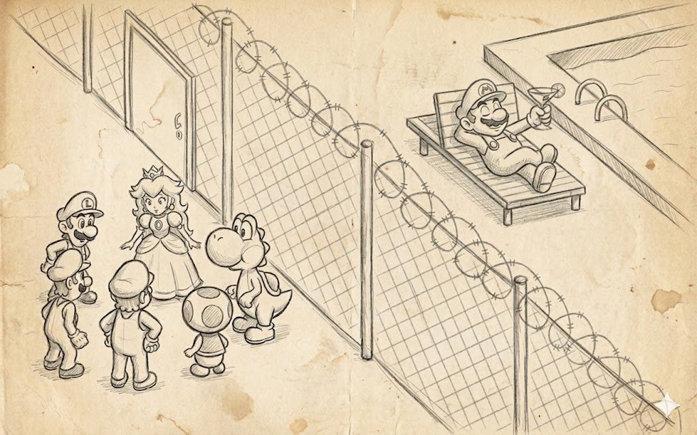
Blackboard is probably the most abstract of all the "big" patterns, much loved at conferences and in articles and much disliked to write by hand in production. And yet it has somehow strangely seeped into the modern gamedev industry almost everywhere, only under other names and mixed in with other patterns.
Its history is fairly venerable and came from 1970s AI research, when at Carnegie Mellon they tried to recognize speech and realized one specialist couldn't cope, and made several specialists of different natures work together (on phonemes, on words, on grammar, on semantics), each of whom looked at a shared data structure, saw there the intermediate hypotheses of their colleagues, and wrote their own there too.
The result was the idea that instead of making your modules call each other directly through interfaces, you should put a shared board between them and let each module independently publish its observations, hypotheses, and conclusions on this board, and independently subscribe to changes, without knowing or wanting to know who exactly writes them.
If, as you recall, a layer is "talk through my facade," and a subsystem is "let's know about each other a little," then a blackboard is already "no one calls anyone, we communicate through facts on a shared board." And that's it, really... If layers stand vertically, subsystems as a scattering of circles, a pipeline as an arrow, a microkernel as a star, then a blackboard looks like a big fat rectangular plane in the center, into which plugins sitting around look from different sides, with no arrows between the plugins at all.
How is a blackboard fundamentally different from a subsystem with a shared object? This question inevitably arises, because our subsystems already communicate through a shared World object, and it seems a blackboard is the same thing, only off to the side and nailed down. But first, a blackboard has no concept of a "data owner," any agent/plugin has the right to write any key, and no one is formally considered the source of truth, whereas in subsystems there's almost always an owner, physics owns the physical world, the renderer owns the draw queue, and this is explicitly fixed in code.
Further, a blackboard has no concept of a "call," no one calls anyone, they only write and read, and this asymmetry lets you add and remove agents without coordinating with neighbors. And in a blackboard the semantics of keys is declared separately from the data, that is, the set of keys is an independent artifact that exists regardless of who currently relies on these keys and how, and it can be edited separately in a tool, versioned separately, validated separately for the absence of unused fields.
These differences make a blackboard an excellent venue for a very specific task, namely AI and decision-making under incomplete information, where you have several sources of knowledge (sight, hearing, memory, an order from the group, an instruction from the AI director, the world state), and where the main consumer of this information is no longer a module but a "bot in the game" that every N ticks runs to the board, looks at what's new, and makes a decision. So a blackboard in the industry lives mainly there, in AI, and almost doesn't live where you have well-ordered data flows with clear owners.
Unreal Blackboard plus Behavior Tree
The tidiest blackboard implementation in modern development is the AI Blackboard in Unreal, and it's good in that you can open it in the editor and literally see it on screen. The UBlackboardData object is where you declare in advance a set of keys with their types (Object, Vector, Float, Bool, Enum, Name, Class), set if needed whether these keys synchronize between bots of one group, and save it as a project file. The UBlackboardComponent object is the runtime instance of this schema, one per bot, which can read and write values by these keys, cache them, and send events to subscribers when values change.
A Behavior Tree on top of this works as one of the bots polling the board, and its BlackboardDecorator nodes check key values and make decisions about which tree branch to go down, while its nodes periodically compute new values and write them to the board, or take current values from the board and translate them into lower-layer commands (movement, anim, weapon). In parallel with the Behavior Tree the board is used by other engine systems. EQS (Environment Query System) asks the world for potential cover points or targets and writes the result to the blackboard under the name BestCoverLocation or TargetActor. AIPerception via the UAIPerceptionComponent listens to sight and hearing events, accumulates a list of detected stimulus sources, and writes a key like EnemyActor to the blackboard when it sees someone hostile.
A group of bots can share some keys in a special Shared Blackboard to coordinate attacking one player or spreading out among different cover. And from a gameplay programmer's standpoint it's very important that in this scheme no component calls another component directly, hearing doesn't know about the behavior tree, the tree doesn't know about the cover system, and yet they all work in concert because they have a shared data structure and a shared language of keys.
This gives Unreal very characteristic pros and characteristic cons. Among the pros it's immediately clear that a new AI programmer can add a completely new source of knowledge (for example, a system for hearing gunfire regardless of line of sight) by simply writing a component that creates a LastGunfireLocation key on the board, and the behavior will start seeing it and reacting without requiring code edits. Among the cons it's just as clear that keys are a flat namespace, and in a big project keys with suspiciously similar names soon appear — EnemyActor, TargetActor, LastKnownEnemy, CurrentThreat — between which there is a semantic difference, but none of the new developers remembers exactly what it is, and fun bugs appear like "the bot shoots at one and walks toward another." This is solved by documenting the board, code review, and periodic cleanup, but that, as you understand, is very much not "free."
F.E.A.R. and GOAP over a blackboard
The famous AI in F.E.A.R. (Monolith, 2005) is probably the most frequently cited case of using a blackboard in the industry, though the idea itself was then packaged into the more recognizable brand GOAP (Goal Oriented Action Planning). Under the hood of F.E.A.R.'s GOAP lay precisely a blackboard, onto which the bot's behavior, squad, and memory wrote their observations (where I last saw the player, what cover there is now, whether there are comrades nearby, how long ago we were shot at, how much ammo I have), while the GOAP planner read the current state from the board, overlaid on it a goal of "kill the player" or "retreat with honor," and through a series of linked actions with preconditions and effects built a plan of action for the next couple of seconds.
The result was shocking for the industry of that time, because the soldiers in F.E.A.R. were often smarter than players, covered each other, retreated, and flanked, and behind all this stood not a bulky state machine of hundreds of states but a relatively small set of actions and a shared board that all agents kept up to date. The most instructive thing in this story is that the developers later told publicly many times, and the talk "Three States and a Plan: The AI of F.E.A.R." is still in the GDC Vault, that most of the development went not into the planner itself, which was relatively simple, but into tuning the blackboard. Into devising the right set of keys, into the rules of who updates them and when, into the discipline of "don't write to the board what you just read from it without accounting for the delta," into profiling, because the board was polled thousands of times a frame on dozens of bots, and any getter immediately became a bottleneck. This is a very characteristic feature of blackboard systems in the game world, when the pattern itself is simple, while 90% of the work lies in handling keys and in the debugging tooling.
Halo 2 and the blackboard as an architecture
Halo 2 brought probably the boldest step in bot development, showing that the entire AI architecture can be done on a blackboard. Their bots were effectively a set of behaviors, each of which looked at the board and made decisions, while the board itself was hierarchical, and each bot had its own local board, the group of bots a shared squad board, and the mission a global level board, and through this hierarchy information rose from the bottom up and descended from the top down. When the squad commander said "retreat," he actually wrote the key SquadOrder = Retreat to the squad board, and each squad member saw this change and reacted in their own way: one started throwing a cover grenade, the second crawled to cover, the third healed a comrade.
This gives us one useful observation that a blackboard works wonderfully with a hierarchy of cooperation, and that different levels of decision-making can live on different boards of one format, and this naturally maps onto "individual, group, army, campaign." Later a similar approach was taken by Killzone 2/3, The Last of Us, and Crysis, and in any more or less modern tactical shooter with coordinated enemy actions there's most likely some variation of a hierarchical blackboard under the hood.
The Sims and the blackboard turned inside out
The Sims made one of the most elegant variations of a blackboard, in which the board is essentially the game world itself, and the agents are the sims. The idea, described in the publications of Ken Forbus and Will Wright and in a heap of subsequent interviews with the Maxis team, is that an object in The Sims (a sofa, a fridge, a bath, a TV) advertises itself to sims through a system of "points," the sofa says "I give +Comfort -Energy if you sit on me," the fridge says "I give +Hunger but require walking 10 tiles," the bath says "I give +Hygiene if you're not at work," and these "points" are laid out in a shared space on which the sims around can read them and compare with their own needs.
The sim itself at each moment has a vector of needs (Hunger, Energy, Bladder, Hygiene, Social, Fun, Comfort, Environment), looks at all the "points" around, computes for each a utility as a function of its needs and the path cost, picks the best, and goes to execute it. This is a very beautiful inversion of a blackboard, because the board here isn't a separate structure but the world itself in the role of the board, and extending the game with new objects automatically extends the available options for the sims without editing their AI.
In this approach expansions and DLC work completely for free, and a new object in The Sims 2 Pets simply shows its own "points," and the sims start using it without knowing in advance about this object's existence, and no one writes a line of new AI code. By the way, I consider The Sims the most elegant blackboard implementation in the industry, and anyone planning to build AI on a blackboard should look at how the game is built to feel the range of possibilities.
Where else a blackboard lives
If you look closely, a blackboard in the form of "a shared data structure through which different modules exchange facts" has crept into the modern industry in very many places. It's just called differently. Influence maps in RTS, from Empire Earth and StarCraft to Total War: Warhammer III and Company of Heroes 3, are the most natural blackboard, in which map cells act as keys, and different sources of knowledge (enemy units, friendly units, resources, danger zones, AI targets) write their numeric estimates into these cells, on top of which the AI strategist makes decisions about the direction of attack and defense. Threat tables in MMOs, in World of Warcraft, FFXIV, Guild Wars 2, are another blackboard, in which the keys are the list of players and the values are accumulated aggression, and bosses read this board every tick and decide whom to switch to.
ECS as an architectural device can also be read as a global blackboard, in which the keys are (Entity, ComponentType) and the agents are the systems that read and write components. This analogy isn't a stretch, because in EnTT, flecs, Bevy ECS, Unity DOTS data access goes precisely through the declaration "I write these components, I read those," and the world itself (World or Registry) acts as the board, and the systems as agents. The 1970s researchers could hardly have foreseen this, but in modern form it looks as if the blackboard grew, turned into a full-fledged data-oriented architecture, and became the standard way to write server code in modern engines.
To the same series we should add GameplayTags in Unreal and the proprietary tag systems in Frostbite and Decima, which are essentially yet another name on the board without a value (or with an implied value "true"), and the World State in the strict sense of GOAP planners, and the AI Director in Left 4 Dead, which looks into a shared board of the players' emotional state (how long ago they shot, how split the group is, how much time has passed since the attack) and decides when to stage the next zombie surge. When you see in a game system's architectural diagram a big central "World State" to which arrows reach from all sides, that is a blackboard, just renamed for marketers' convenience.
Where a blackboard breaks
There are several main problems. The first is races on data access, because a blackboard by its idea allows multiple writes of the same key, and if in one tick three sources of knowledge update the key EnemyActor with their own versions (one by sight, the second by hearing, the third by squad order), then the final value is determined by whoever wrote last, and this depends heavily on the order in which the engine updates components, and any change to this order silently changes the AI's behavior. This is cured either by explicit prioritization of sources, or by separating keys into distinct domain spaces ("what I know by sight" separate from "what the commander told me"), or by introducing versioning of data on the board, in which the source and time of each write is preserved, but each of these solutions adds infrastructure and burdens the developer.
The second is implicit dependencies through key names, and this is perhaps the most characteristic disease of a blackboard. In the code there are no direct connections between two agents, they seem independent, and you can fearlessly change one of them, but if that agent stopped writing the key BestCoverLocation, or started writing it once every ten frames instead of every frame, or changed the semantics from "the best cover point" to "the nearest one," then all the AI that relied on this board starts behaving in a new way. In a small project this is cured by discipline and pair development, in a big project no one can cure it anymore, and besides formal board schemas with rules specified for each key and automated change tests there's no remedy.
And the last problem is performance. As the number of agents and keys grows it behaves very poorly: when you have 10 bots and 20 keys, polling the board is free, but when you have 200 bots and 200 keys with validation, the board suddenly becomes a hot data structure, and each read through FindKey(name) — either a hash table or an array with linear search — starts noticeably eating perf. This is cured by moving from string key names to indices, compiling into a flat structure with direct access by offset, or separate fast paths for the hottest keys, which ultimately turns the blackboard into an ECS-like structure in which a key is just a component number and an agent is just a system with a declared filter.
When to choose a blackboard
It's worth taking a blackboard when your system simultaneously has a multitude of independent sources of knowledge of different natures, for which it's inconvenient to know about each other. This is, as a rule, AI with sight, hearing, memory, allies, directives from the commander and from the AI director, and any rigid coupling of these sources through direct calls creates a web of code. When there are several independent consumers of this information, which it's also inconvenient to stuff into one big "bot brain" object, and in modern AI these are different subsystems of the same bot (planner, movement, animation hints, combat hints), plus neighboring bots, plus the AI director. And when there's a readiness to invest in debugging tools, because without a data debugger, a history of its changes, and validation, a blackboard very quickly turns into a black box in which no one understands anything.
If all the conditions are met, a blackboard gives a wonderful decomposition of AI into independent modules and scales well, and it's not for nothing that I give so many examples from big shooters and strategy games, because that's exactly where this binding of modules is justified. But if even one condition isn't met, a blackboard will bring more problems than benefit, because you'll get extra data indirection, or independence of sources without a multitude of consumers, or both without tools, and in the end you'll have a web of code on your hands anyway.
BLACKBOARD
+------------------------------------------------+
| EnemyActor = Player_3 |
| LastSeenAt = (123, 45, 8) |
| BestCoverPoint = (130, 50, 8) |
| SquadOrder = Flank_Left |
| Suspicion = 0.72 |
| TimeSinceShot = 1.8 |
+-+----------+----------+-----------+-------------+
^ ^ ^ ^
| write | write | write | write
| | | |
+-+--+ +--+---+ +--+----+ +--+-----+
|Sight| |Hearing| |Squad | |Director |
|Sense| |Sense | |Comms | |AI |
+-----+ +-------+ +-------+ +---------+
v v v v
| read | read | read | read
| | | |
+-+--+ +--+---+ +--+----+ +--+-----+
| BT | | EQS | | GOAP | | Anim |
| | |Query | |Planner| |Hints |
+----+ +------+ +-------+ +--------+If we try to formulate a rule of application, a blackboard in its pure form is a pattern for exactly one area. AI and decision-making under several independent sources of knowledge and several independent consumers, and in this area it has no adequate replacement. Attempts to get by with direct calls and subsystems lead to a web of code that's impossible to extend in a year. But outside AI a blackboard almost always either turns into another pattern under another name (ECS, GameplayTags, Influence Map, World State, Threat Table), or serves as an expensive and cumbersome substitute for simpler solutions, and a blend of a blackboard with other patterns is the norm, and that's how it should work, really.
Design strategies
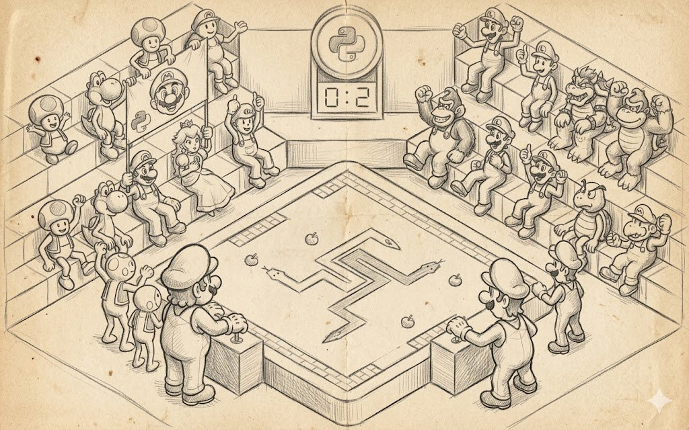
If the "big" patterns described above answer the question "how do we pack the code into bricks and what shape they'll be," then design strategies answer the far more painful question "from which end will we even lay these bricks." Few people focus on this topic at all, because the industry loves to think "we do top-down" or "we do bottom-up," and almost no one considers that the direction of design is itself an architectural decision to be made at the start of the project, not obtained at the whim of the tech lead's left heel after reading another opus.
A game isn't designed top-down, or bottom-up, or from the middle. In reality there are three more or less distinguishable directions, each a peculiar compromise between different forces of attraction. Top-down development, let's call it that, works well where there's already a strong game design or product concept, and the technical risk is that you need to code up a known-in-advance list of systems. Bottom-up works well where there's a strong technology, and the game is in a sense assembled around it, and only then come game design, systems, and everything else. And constant refactoring works where there's neither, and the real requirements are born right in the process of playing, and you're ready to pay for it by rewriting each subsystem two or three times.
Top-down: details later
Top-down is an approach in which you sit down at the start of the project and lay it out from the statement "what game we have" through a list of systems ("economy, combat, diplomacy, AI, multiplayer, meta-progression") down to specific modules and interfaces inside each system. On paper it looks very beautiful, and any investor, any manager, and any game designer in the first half of the project will love you for it and carry you on their hands, because top-down produces beautiful diagrams, lots of beautiful... very many beautiful... well, you get it... clear plans and predictable schedule estimates. Any project manager would give their right kidney for the chance to work on such a project, which usually starts with a text design document of, say, three or four hundred pages.
Top-down works when the game is a sequel or a threequel and already fairly big, when you're making Civilization VII, FIFA, Football Manager, Call of Duty, or another Assassin's Creed, and you have the previous installment on the wall, you have telemetry on which subsystems players visit most often and which features need strengthening, and you have a team that two years ago already assembled exactly the same architecture, so top-down here is normal engineering work to refine a knowingly working construction. Top-down also works for big MMO and live-service projects of large teams like World of Warcraft, Final Fantasy XIV, Destiny 2, EVE Online, because these projects already have a platform, server infrastructure, a debugged content pipeline, and each next expansion is first of all a decomposition of a new feature into the game's existing stack.
The price of top-down hides in the word "reality," because top-down development mortally dislikes it when the planned big picture doesn't survive the first collision with a real build. Because at the top the interfaces and modules are already built for the old picture, while the new picture requires a different decomposition, and any transition means either rewriting half of what's done or stretching the new owl onto the old globe, pleasing the globe while not too much upsetting the owl. Repeat three times before release.
So top-down in indie and in new IP almost always ends one of two ways: either the team ships a game that feels "correctly made but not fun to play," because the game design didn't have time to mature by the moment the system was already ready; or after a year of top-down design the team switches to constant refactoring mode and rewrites half the architecture, losing another year.
From a process standpoint top-down gives another characteristic side effect: it tolerates late-arriving programmers poorly. If on a project started top-down new developers appear after a year of work, they need to read that whole ton of documents that appeared since the project's birth, absorb its principles, and learn to write in its style. The onboarding cost on such projects turns out significantly higher than in bottom-up or constant refactoring, because in a top-down project the architecture is strongly vertical, and one part is hard to understand without understanding another. On the other hand, once onboarding is done, a person becomes highly productive, and this largely explains why top-down works well in large established studios with slow staff rotation and works poorly in startups where part of the team changes within a year.
Bottom-up: technology first, the game later
Bottom-up is the opposite approach, in which you start not with a design document but right with a piece of technology you want or vitally need to have, and then assemble the game around this technology, choosing the genre and mechanics so they use this technology to the maximum. On paper this looks very amateurish, because any business methodology of the last twenty years demands starting with the user, the product, and marketing, and an engineer who declares "I'll write the renderer first, and then we'll think about what game to make for it" is perceived as a m... who was let near development by a misunderstanding. But in practice bottom-up is one of the most workable approaches, and half of legendary games went through it.
The canonical example is id Software in the first half of the nineties, when first Carmack wrote a fast rasterizer and a software 3D engine, and then the team thought about what to do with it and which game would best show off both this rasterizer and this engine. Thus Wolfenstein 3D appeared, then Carmack wrote a new engine in which BSP trees and portal rendering appeared, and DOOM was assembled for them, then he made full 3D, and Quake was assembled for it. In each case the technology came first, the design was assembled to fit it, and this was a conscious choice of the team, described in a mass of interviews and in David Kushner's book "Masters of Doom." The same approach was used by Bullfrog in the era of Theme Park and Dungeon Keeper, by Frontier Developments with Elite, by Origin Systems with Wing Commander and Ultima Underworld, and by Crytek with the first Far Cry, which was originally conceived as a technological demonstration of CryEngine 1. And, of course, my beloved Naughty Dog, who around their own DSL GOAL (Game Oriented Assembly LISP), and later GOOL and ICE, built whole projects from Crash Bandicoot and Jak and Daxter to early Uncharted, and the gameplay relied heavily on the specific capabilities of these languages.
GOAL does not run in an interpreter, but instead is compiled directly into PlayStation 2 machine code for execution. On the console the language compiled into system and engine calls on par with C/C++. The first Uncharted didn't use GOAL — by that point Naughty Dog had already moved fully to C++ under pressure from Sony.
"Naughty Dog had to create its own tools for GOAL... Naughty Dog started using GOAL again. They used it for scripting in some PlayStation 3 games. This included The Last of Us." That is, Lisp returned as a scripting language in the PS3 era, not as the main gameplay language. Uncharted 1 and 2 were written in C++ with their own scripting systems.
Bottom-up works where the technology itself is a sellable thing, that is, when players come to your game primarily for what others don't do. The first Crysis with draw distance and dynamic vegetation, the first Half-Life 2 with Havok physics as a gameplay element, the first Portal with portals as the mechanic itself, the first The Last of Us Part II with facial simulation via motion matching, the first Microsoft Flight Simulator 2020 with the real world on streaming data.
The original engine licensed by Valve was Ipion Virtual Physics (IVP), which was bought by Havok in 2000... and later the IVP solutions merged into Havok.
It also works where the technological foundation is unique and reuses poorly, like Minecraft's voxel engines, Star Citizen with its infinite world, or in research projects where you don't know in advance what game will come out, and the discovery of the technology's properties is the main goal. The price of bottom-up is the risk of getting beautiful technology without a game, and the industry has paid this price many times. A tech demo is made, presented at E3, gets applause, goes to a publisher, and two years later either the project is closed because a game didn't assemble around the technology, or a commercially weak game comes out in which the technology exists but is needed by no one except its authors. History knows many such cases, and I won't point a finger at specific projects, because anyone who's played games even a little can name a couple of examples off the top of their head.
The second price of bottom-up is a strong dependence on the key person who holds the technology in their head. The id Tech 1 engine was a large piece of John Carmack's work, his departure or illness immediately threatened the company's entire product portfolio, the same was true at Bullfrog with Peter Molyneux in the early stages, and at Naughty Dog with Andy Gavin before the ICE Team became a team. Bottom-up often grow without a culture of knowledge transfer and without strict documentation discipline, turning into projects with a bus factor = 1.
Constant refactoring: rewriting everything, but bit by bit
The third approach is constant refactoring, and it differs from the first two in having no fixed direction at all. You can start from any end, from any side, you write the simplest working variant of any subsystem, play your own build, understand exactly what you don't like, rewrite that subsystem, play again, and so on over and over, until in a year or three you get a game in which each subsystem survived at least three or four rewrites, and the critical systems five or six, and the game feels good because each time the problem's solution was decided based on your own play session. On paper this looks like madness, and if you come to an investor with such a project, they'll very gently send you north. Any effective manager will claim that constant refactoring is simply a nonviable idea and "you have no architecture," but in reality most indie games have precisely constant-refactoring development under the hood, and they're none the worse for it.
Minecraft in its earliest years was pure constant refactoring, and Markus Persson in his blog described fairly openly how he rewrote the chunk system, the lighting system, the lava-water-physics system, the cube renderer several times, because in each next session he understood that the previous version couldn't withstand what he wanted from the game. Factorio went through rewrites well known to the industry at different levels of the stack, from the renderer to belt simulation, and in Factorio Friday Facts they regularly described such rewrites publicly, sometimes with a level of detail considered a trade secret in big studios. Dwarf Fortress by the Adams brothers is the longest constant refactoring in the history of the industry, because the brothers have been rewriting the same project for twenty years, gradually expanding its capabilities and regularly breaking compatibility with previous versions. Stardew Valley is another model of the same approach, in which a solo developer over four years rewrote half the engine code, the dialogue system, the farm system several times, and as a result released a game many today call a model of craft.
Constant refactoring works when the very fact of which game you'll end up with isn't known in advance, and discovering this fact is possible only through playing your own build. This concerns, first, prototypes, because a prototype by definition doesn't know what it will turn into. Second, indie projects in which a single author or a small collective wants the game to feel like a continuation of their ideas rather than the implementation of a pre-written document. Third, early-access projects, because for them it's a normal style of development, when you release a working but incomplete build, gather feedback, rework, and release again, and so on for several years. Steam Early Access over ten years of existence cemented this model as a full-fledged business strategy.
The price of constant refactoring is also its own and also fairly painful. The main price is the cost of rewrites, because rewriting a subsystem is always expensive, especially if during its life other subsystems managed to wedge into it, artists managed to lean on it with assets, or writers with dialogue. Each rewrite has a nonzero chance of breaking something in neighboring systems and forcing you to redo the neighboring system too. In reality projects on constant refactoring often live with long refactoring branches in Git, with complex merge processes, with regressions appearing out of nowhere after each new update, and any indie developer sitting on constant refactoring will tell you that half their working time goes not into new code but into "fixing what worked three months ago."
In studios larger than 5-7 people constant refactoring usually starts to sharply lose effectiveness, because parallel work of several people on heavily changing code leads to constant merge conflicts and mutual resentment, and this is one of the reasons big teams more often gravitate toward top-down even where the project itself vitally asks for constant refactoring. There's also the risk of getting eternal refactoring without a game — simply when the author has no external pressure in the form of a deadline, an investor, or an agreement with a publisher, constant refactoring can imperceptibly become an end in itself. Each iteration improves the architecture but doesn't bring release closer, and in five years the project has magnificent code and tidy subsystems but still nothing to play. Players joke that Dwarf Fortress has been in this state officially from the very beginning, and Tarn Adams says quite openly that he intends to make the game until the end of his life, but this is the exception that only confirms the rule, because most projects that live this way we simply never see.
What actually happens on projects
In its pure form none of the three approaches usually survives to the end in a large project, and almost always the team makes a hybrid, and the typical real trajectory of a project looks like this: the first six to twelve months are bottom-up with elements of constant refactoring, because the team builds the technological core, makes prototypes, and feels out the game. The next year and a half to two is top-down, because the prototype is approved, the design is fixed, and the rest of the systems and content need to be built to plan, and the last year is again constant refactoring, because playtests and focus groups reveal problems that need treating, and rewrites of large systems at this time are practically inevitable. This, by the way, is exactly one of the reasons many developers like working at the start and end of a project and dislike its middle, because in the middle the team lives in the most top-down mode, in which every step is scripted and there's the least room to maneuver.
The choice of direction affects both the team's structure and the code's structure. Top-down scales wonderfully to hundreds of people, because the design is handed down the hierarchy to developers, each gets their piece and doesn't interfere with the neighbor. Bottom-up naturally limits the team to the size of the core holding the technology plus a small wrapping on top, and so it's rarely found in projects larger than 20-30 people. And constant refactoring practically doesn't scale beyond 5-7 people, and it's not for nothing that I give examples with solo developers above, because constant refactoring with twenty people is organizational hell with constant conflicts and cursing in the kitchen. So, when choosing the direction of design, you simultaneously implicitly choose the maximum team size on which this choice will work, and conversely, the team size dictates which direction is possible in principle.
Team size
|
|
1-3 4-10 11-50 50+
+---------+---------+-----------+-----------+
CR | ******* | ***** | ** | . | constant refactoring
BU | ***** | ******* | ***** | ** | bottom-up
TD | * | *** | ******** | **********| top-down
+---------+---------+-----------+-----------+
* the more stars, the more natural the approach
for a team of this sizeHow to choose
The practical rule I'd formulate on top of all this sounds like this: if you have a strong design document based either on a previous installment of the series, or on an established genre, or on a formal franchise with clear constraints, and at the same time you have a team larger than ten people, choose top-down, because you'll pay for it in pure engineering effort, and this effort will guaranteed turn into a product. The main risk here is losing touch with the game and making a "correctly built but boring" project, and it's cured by regular playtests from the very start, no less than once a week.
If you have a technological prototype, or you're building an engine, or assembling a game around a specific technology, choose bottom-up and hire a very good engineer or a small team of engineers, and at the same time one or two game designers who understand this technology and can invent mechanics for its capabilities. The main risk here is getting a beautiful tech demo without a game, and it's cured by the strict requirement "show a playable prototype every two months," even if it's embarrassing.
If you have an indie project, a small team, and a non-obvious concept, go for constant refactoring and don't apologize for it to anyone. Here the main risk is eternal refactoring without release, and it's cured by an external deadline, an agreement with a publisher, or a personal promise to yourself that in two years you release at any cost.
But whatever approach you choose, don't declare it a religion. The industry has no place for "we always do top-down," nor for "we work bottom-up on principle," nor for "we have Agile and continuous refactoring everywhere," because any such formulation means the design direction was chosen in advance without regard for the project, and both the project and the team suffer from this methodological blindness. It's much better to treat the direction as another lever you hold in your hand and at each moment of the project decide which way to turn it now, and a tech lead who can consciously switch between top-down, bottom-up, and constant refactoring depending on the project phase makes noticeably more successful games in the long run than a tech lead who chose one "correct" approach for life and confidently uses only it.
Push vs Pull
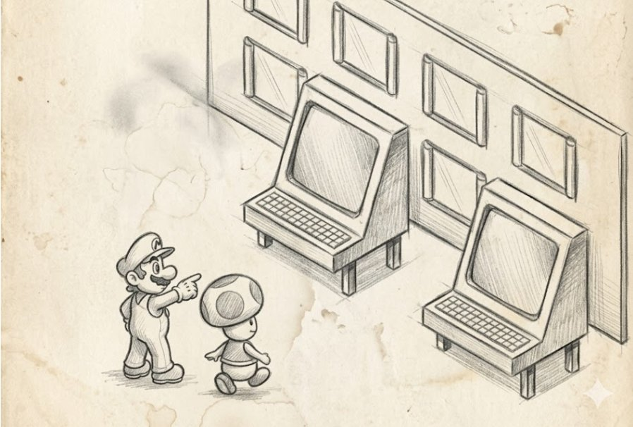
After you've decided on the design direction, the next question immediately arises: how exactly your code will obtain current values, from the current sound volume to the list of assets on the current level. Will it run for the value itself every time, to where it lies, or will those who change these values notify it about changes?
This sounds like a minor technical detail, almost a matter of personal taste, but over a three-year project horizon the choice between push and pull matters about as much as the choice between subsystems and layers, because push and pull don't just differ in call style, they answer fundamentally differently the question "who is responsible for data being current."
In the pull model, responsibility for currency lies on the data consumer, that is, on you, and when gameplay code needs to find out the HUD scale, it calls game::get_setting("hud.scale") and gets the value at the moment of the call; when the renderer needs a 3D model, it calls render::Load3DModel("hero.fbx") and blocks until the model is in hand. When AI needs to find out whether it currently sees the player, it calls IsActorVisible(player) and computes the result on the spot. This is the basic intuition of any beginning developer, because in pull everything is arranged as straightforwardly as possible, and the data is stored somewhere off to the side, you know where, you go there, take it, and come back.
In the push model, responsibility for currency lies on the data source, and when a setting changed, someone tells you about it via OnSettingChanged("hud.scale", old, new); when an asset became available, the AssetManager sends you OnAssetReady("hero.fbx", handle); when the player came into the AI's view, the bot gets an event OnSensedPawn(player), and then it's your job to react to this event rather than try to poll everyone once a frame.
In a push system you can't write a loop like "I'll run over all resources and load the ones matching a name pattern," because in push no one "runs for the data" themselves. In a pull system such a loop is quite normal and occurs on every page of code, so if you take any project and run grep over it looking for loops loading resources by index or by name pattern, in half an hour you'll very accurately determine which mode the asset manager actually works in, regardless of what the architectural documentation says about it.
Often the result diverges from the documentation, because the manager is declared push while half the code goes pull, because that was faster to write. The same check works for settings, for cvars, for AI data, for world state, and if the code contains mass polls like "I'll run over all bots and ask each whether it sees the player," that's pull. If instead the code has subscriptions "notify me if at least one bot saw the player," that's push. Big teams quite often live in a mixed mode precisely because individual subsystems chose their mode independently, and in a year the architecture declaration "we're all reactive" completely fails to match the real picture in the codebase.
When pull is the right choice
First, when the rate of value changes is very low, and there are few consumers. If your gravity setting changes once every six months, when the game designer moves a slider in the editor, and two or three places in the code read it, there's no point setting up any push infrastructure, because you'll spend more effort registering subscriptions and handling events than you save on updates. Second, when a value is easy to compute on the fly at the moment of the call, and caching it is more expensive than recomputing it. A modern hash on 64 bytes, an access to thread-local context, a read from the L1 cache of a CPU structure — all of this in pull costs nanoseconds, and setting up push infrastructure to notify of such changes is economically meaningless. And third, when the very fact of requesting a value is semantically important, for example when polling the time system specifying a particular timescale (UnscaledTime, GameTime, NetworkTime), because in these cases you want to get the value at exactly the moment you asked for it, and no push infrastructure with a one-frame delay should work here.
Good game engines leave pull for a huge number of system things, and do so completely correctly. Quake and its derivatives (Half-Life GoldSrc, early Source) are built almost entirely on pull: cvar_t* sv_gravity = Cvar_Get("sv_gravity", "800", CVAR_SERVERINFO) is a pull handle on a cvar, read from any place in the code anew each time. gi.imageindex("textures/wall01.bmp") is a pull loader that loads a texture if needed and returns an index; cl.snap.ps is pull access to the player's current predicted position. This isn't from laziness or ignorance of patterns, it's a conscious decision, and it works because Quake is a game with a relatively compact set of assets known in advance and without serious streaming.
When people try to build an open world around this same engine, pull starts to break, and you have to move subsystems to push piece by piece, and this, by the way, is exactly the story Source went through while developing Half-Life 2 with all its streaming compromises. Pull lives wonderfully in gameplay rules, in math utilities, in configuration-query functions, in immediate-mode UI, in console debug commands, and an attempt to rewrite each of these places in push leads to infrastructure bloat with no visible benefit.
When pull turns into a problem
But where pull unequivocally becomes a bad decision is resource streaming in open worlds. If you have a game at the level of GTA V, RDR2, Cyberpunk 2077, Microsoft Flight Simulator, or Star Citizen, in which only a tiny fraction of the full asset set can be in memory at once, any attempt at pull loading of the form "needed a model, loaded it, drew it" will lead either to stutters every frame, when the model loads at the moment of its first request, or to the need for each consumer to guess on its own what it'll need in a second and go for it in advance.
This venture fails with equal success in all projects that try it. So open worlds must be push, and the centralized World Streaming Subsystem in the Rockstar Advanced Game Engine, World Partition in Unreal Engine 5, the Streaming System in CryEngine 5, Cell Streaming in Frostbite itself looks at the camera position, its movement speed, the gaze direction, and proactively decides which assets to load and which to unload, and sends the game the events OnCellLoaded, OnCellUnloaded, OnAssetReady. Gameplay code in a modern open world doesn't know at all which specific assets are currently in memory, it works with those it was given and is subscribed to changes.
Another place is UI and its connection to the data model. When you have a player's health counter in the HUD, and you implement it as pull, that is, every frame the UI asks the actor for its HP and updates the text, this works but scales poorly, and if you have a hundred UI elements in an open-world game, and each polls its model, then in the profiler you see 0.3 milliseconds entirely spent on "UI getters." Worse, with complex HUD elements you start writing dispatch logic "if HP changed relative to the previous frame, play a tween animation," and this is essentially badly implemented push on top of pull. So modern UI systems give you reactive bindings, in which a UI element is described as a function of the model, and the engine itself tracks which model fields to switch to push and when to redraw the widget. And the comparison of this with imperative pull UI is so obviously in push's favor that in the industry this transition has happened over the last ten years at practically all major engines.
Expensively designed push and cheaply written pull
The push model is an expensive and hard-to-extend thing in itself, and this must be accepted as part of its architecture rather than as a flaw. The main price of push is subscriptions, because you must have subscriber registries, these registries must have thread-safe variants for cases when a subscription is made from one thread while an event is sent from another, subscriptions must have weak references so that dying subscribers don't leave dangling pointers, events must have a delivery guarantee even across frame boundaries, and in especially heavy cases there must be event queues with priorities for when several systems are subscribed to the same event and the order of their invocation matters.
In pull you have no subscriptions, objects are created and die without consequences for neighbors, while in push every object subscribed to something must correctly unsubscribe on destruction, and if it doesn't, garbage starts accumulating in your subscriber registry, which on the next broadcast either crashes with an access violation or calls random code at a random address, and these bugs are among the most unpleasant, because they reproduce every other time and only under certain scenarios. The cure is known: either RAII wrappers with automatic unsubscribe in the destructor, or weak pointers, or explicit registration of the subscription in a lifetime object like UScriptStruct->BindToObject(owner), which itself nullifies the subscription on the owner's death.
In pull, when something is wrong, you set a breakpoint on a read and see the whole call stack that led to this read. In push, when something is wrong, you set a breakpoint on a callback and see a stack in which only the source, the dispatcher, and the callback appear, while the context that led to this event may lie in a completely different thread, in a different tick, and sometimes on a different machine entirely if we're talking about network replication. So in push systems, far more than in pull, you need good tracing tools and an event log recording "when and who sent, who received," breakpoint by event type in the engine's debuggers, a timeline viewer for asynchronous events, a Network profiler for replication events, and teams that economize on these tools then pay for each such decision with thousands of hours of QA.
And finally, a simple broadcast in which one value change triggers an update of five hundred subscribers is theoretically O(N) and works fast, but in practice you get a cache miss on each access to each subscriber plus crossing virtual tables plus branching in each callback, and for a system of a thousand lightweight subscribers push easily starts losing to pull by five to ten percent of the frame budget. So push messages are often serialized over a single frame and processed in a single pass at the end of the frame, to merge accumulated changes and process them in a batch, and this is no longer pure push but a hybrid of push with a queue, which behaves almost like pull at the moment of reading.
Hybrids and real life
In real modern engines you'll find practically no pure push or pure pull anywhere, and most working architectures are a hybrid in which different subsystems use different models for their own reasons. The most telling example is Unreal Console Variables: IConsoleVariable has the classic pull method GetInt(), which reads the current value instantly, and at the same time a push method OnChangedDelegate, which you can subscribe to in order to get an event on a change. This gives the best of both worlds, when hot code polls via pull without overhead, while subsystems that need a reaction to a change subscribe via push, and you pay for neither one nor the other where it isn't needed.
Asset Streaming in Unreal is arranged similarly, where you have the pull call LoadObject(path) for cases when you urgently need an asset and are ready to block the thread, and the push call via StreamableManager::RequestAsyncLoad(path, FStreamableDelegate::CreateUObject(this, &Class::OnLoaded)), which returns control immediately and sends an event when the asset is actually loaded. Usually on a project 90% of calls go through push, while the remaining 10% are either startup assets loaded on the loading screen or rare random cases.
Network replication in modern engines is an interesting case of pure push architecture, in which the source of changes (the server) itself decides whom, what, and when to send, and the client gets events like "this variable now has such-and-such a value." Unreal Network Replication via OnRep_FunctionName is push in its purest form, Photon Quantum, Mirror, and FishNet in Unity do the same, GameNetworkingSockets in Source 2 is push at the low level with direct flow control. And here pull is impossible in principle, because the client physically has no access to the server's data and can't "pull" it, all it can do is subscribe and wait.
When push becomes an anti-pattern
In the industry over the last ten years there's a fashion for "everything reactive, everything on events," and this fashion leads to exactly the same problems as any other radical methodology. Push becomes an anti-pattern when you use it for simple synchronous operations for which pull would be more natural: when gameplay code, to get the current time, sends an OnTimeRequest event and waits for it to be answered from the other end of the codebase, this isn't reactive architecture, it's engineering madness. Push becomes an anti-pattern when your event frequency is knowingly high and subscribing every bot's AI to a push event OnPlayerPositionChanged that arrives every frame is just a more expensive way to poll the player's position via pull every frame, plus the dispatcher overhead on top.
Push becomes an anti-pattern when the order of events is critical, and the classic example is AI that received OnEnemyVisible and OnEnemyLost in the wrong order because the events are broadcast on different threads, and now a bot with an enemy right under its nose thinks there's no enemy nearby. Push becomes an anti-pattern when the team uses it as a way to avoid responsibility for design. This is probably the most frequent disease of modern push architectures, when a developer realizes that new functionality requires three subsystems to change their state in a coordinated way, doesn't want to figure out their relationships, sets up an event to which they subscribe all three subsystems, and sends a minimum of information in this event, counting on the subsystems to "figure it out" themselves. In a year you have a web of events on your hands in which each event is subscribed to seventeen others, and any attempt to debug it ends with the developer going for coffee on the terrace.
How to choose (push/pull)
The practical rule I'd recommend here sounds like this. Go pull... In the sense of: use pull for the hot path and for values that rarely change and are easily accessible. And use push for asset streaming, settings, UI with reactive bindings, for network replication, for AI, and for save/load events. Don't go all-in on push just because it's "modern," and don't go all-in on pull just because it's "simple," because pure radicalism on this question always costs more than a reasonable hybrid.
And finally, push isn't just a "technical choice," it's a new responsibility for the tech lead. In pull projects it's enough to ensure the code is written neatly, while in push projects you additionally have to build documentation for all events, tools for tracing them, a weak-references policy, an unsubscribe-in-destructors policy, an event-naming system, and train the team to understand how to read asynchronous code. This is a second infrastructural load on top of the game code, and it can amount to up to 15-20% of the team's total work volume, and these 15-20% must be planned in advance, because otherwise they'll appear anyway, just at the expense of something else, usually at the expense of the game's quality at release. The push/pull axis itself is perhaps the lever most often underestimated at a project's start, and which then becomes one of the most expensive architectural mistakes to fix if the choice was made blindly.
PULL PUSH
+------------------------------+ +----------------------------------+
| the consumer | | the source |
| goes for the value itself | | notifies subscribers itself |
| every time: | | when the value changes: |
| v = get_setting("...") | | OnSettingChanged(name, old, new)|
| m = load_model("...") | | OnAssetReady(path, handle) |
| hp = actor->GetHP() | | OnHealthChanged(old, new) |
+------------------------------+ +----------------------------------+
cost cost
+------------------------------+ +----------------------------------+
| cheap in infrastructure | | expensive in infrastructure: |
| spreads across the code | | subscriber registry, unsubscribe |
| hard to react to a change | | on death; races, ordering, |
| and to coordinate | | hard debugging are possible |
| several consumers | | but the system knows on its own |
| | | where to look and whom to notify |
+------------------------------+ +----------------------------------+Wrong scripting languages
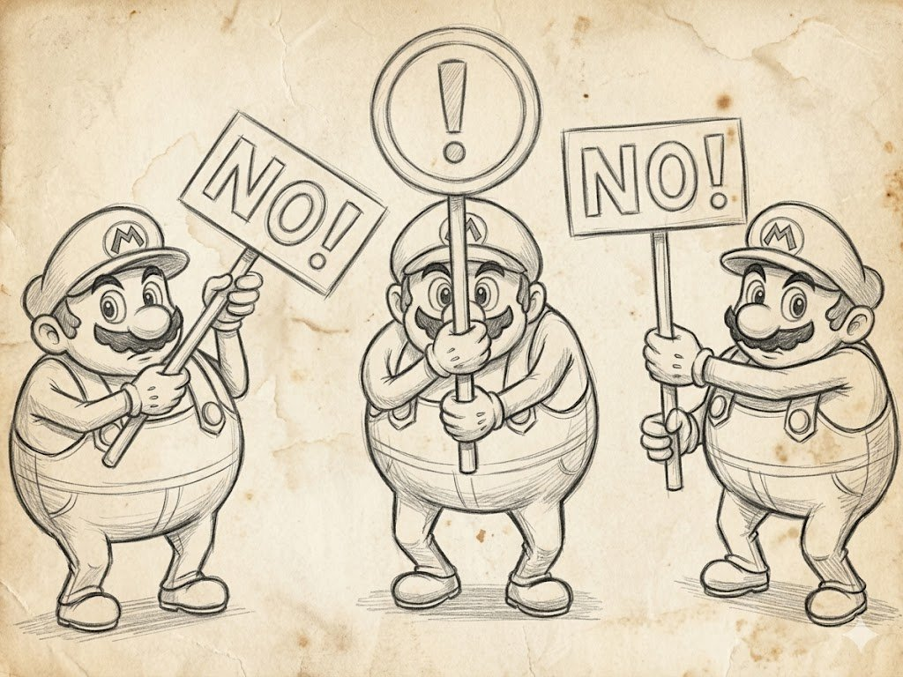
Programmers make WRONG scripting systems because they aim them at programmers, and as a result only programmers can use them. This is the diagnosis of an industrial disease that still regularly occurs in new studios with no experience on big projects, and its cause is always the same. The programmer believes a scripting language is just a simpler and more dynamic C++, and implements it the way it would be convenient for themselves, without considering that a scripting language's target audience is completely different, and that for this audience "convenient" means something entirely different than for a programmer.
The ideal script for non-programmers isn't a script at all. This means that if you want to give a game designer or technical artist the ability to change something in the game without calling a programmer, your task isn't to hand them an IDE with syntax highlighting and a four-hundred-page manual, but to hide the programming behind an interface that looks like something fundamentally different. Like a table, a state diagram, a timeline, a node graph, a questionnaire, a material editor with sliders, anything except text with curly braces. And the industry, having gone a long way from the Quake Console to Blueprints and Niagara, learned this lesson the hard way and keeps learning it, because each new generation of developers still regularly invents a "convenient script for the game designer" that turns out convenient only for the programmer themselves.
Why a scripting layer is needed at all
Before analyzing specific systems, it's worth answering the question of what all this infrastructure on top of the engine's main language is even for. A scripting system is made for two things, and both are economic rather than technical. The first is making the product cheaper, and there are only three ways to make a product cheaper. Fewer people, lower salaries, and shorter timelines. Scripts help achieve the second and third options at once, because a game designer and a technical artist cost less than a systems programmer, and iterations in a script without recompiling the engine go ten times faster than iterations in C++.
The second is improving the game, and there's only one way to make a game more interesting. It's to give the ability to move sliders to those who understand it, and as you understand, those aren't programmers at all. This is probably the most important sentence in this whole article, because it explains why scripts aren't about saving resources but about access to the creative decisions of people who know how to make them. From these two points it immediately follows that a scripting layer isn't a question of "is it needed" but of "who it's for," and if there's one person on your project, extensive data-driven design isn't just unneeded but contraindicated, because writing scripting infrastructure alone and for yourself is pure waste of time that you'd better spend on the game itself.
Any conversation about scripts begins with acknowledging which non-programmers exactly will work with them, how many there will be, what their level is, and what exactly you want to let them change without your involvement. The answer to these questions almost entirely determines which scripting system you should build, and trying to make a "universal scripting system" without these answers is the same mistake as building a "universal engine" without understanding which games will be made on it.
The Quake Console and cfg files
The very first and still-living form of a scripting layer in the industry is the Quake Console; formally it's not a script at all, it's just a set of cvars and commands that a player or scripter can pass, and the engine will execute them at load or at runtime. Carmack in 1996 made it not out of great architectural thought but purely for applied needs, because Quake had to be configured on many different machines with different hardware, and values hardwired into the exe gave the game designer and QA no chance whatsoever to tweak parameters for a specific scene without recompilation.
The solution came out simple to the point of genius, and each "name plus value" was essentially a command for registered functions with arguments, and a cfg file is a sequence of calls with the ability to execute these commands. It's amazing how long-lived this simple construct turned out. The Quake console passed into Half-Life, then into the Source Engine, then into Source 2, and today in Counter-Strike 2 it's exactly the same interface with bind, alias, cvar, +attack, mp_freezetime 5 that players wrote in 1998.
The same approach went into id Tech 3, id Tech 4, id Tech 5/6/7, and in Doom Eternal you can still open the console via a cvar in the startup parameters. In Unreal the console commands are different, but the idea is the same. This format took root so well that a whole generation of games appeared that sell precisely thanks to players' ability to configure everything through the console, making both the console and cfg files a minimal scripting layer that doesn't require the user to know programming, while still giving them the ability to "move sliders." The paradox is that many modern engines forgot about this level and jump straight to something complex, and then wonder why game designer Vasily finds it inconvenient to configure the game through thirty-three menus?
DSL for non-programmers
The next level is a specialized language for a specific task, like par { loop { set_color(red); wait(1); ... } }, and the idea here is fundamentally different from the console. The language must be domain-specific, that is, express not general computational power but a thought understandable to the user at a level natural for the domain. In this case the user doesn't write a program, they describe behavior, and the language is responsible on their behalf for how this behavior executes at the right time with the right resources.
The most successful example of such a DSL in the industry is probably Flash/Animate timelines. Adobe Flash originally wasn't perceived as "programming" at all, the animator just drew keyframes, laid them out on the timeline, added layers and effects, and over several years on this foundation grew practically all the 2D web animation of the 2000s, plus a heap of games (Machinarium, Limbo, Braid, Cuphead) whose entire 2D animation was made in Flash/Animate with subsequent export to sprite lists. None of the animators considered themselves programmers, while technically they were programming the movement of objects over time.
Similar DSLs in node or timeline form live everywhere today. Unity Animator and Mecanim let you assemble a character's state machine from states and transitions, and an animator can make all of a character's combat animation without writing a line of C#. Unreal AnimGraph and Animation Blueprint do the same in nodes, plus allow applying Inverse Kinematics, Aim Offset, Layered Blend Per Bone. Spine and DragonBones are specialized DSLs for 2D skeletal animation, in which the animator works with bone chains, meshes, and atlases and again writes no programs. UE UMG Animations let a UI designer assemble complex widget animation with tweens without programming. And in all these cases working in a DSL is perceived not as "programming" but as "creativity," and that's what distinguishes a proper DSL from its pseudo-variant, in which the user was formally given the ability to change something, but through a text editor and with a reference to documentation.
General-purpose languages as a scripting layer
When a DSL's capabilities aren't enough, because you need not movement descriptions but full-fledged logic with conditions, variables, loops, and complex data structures, the industry goes to general-purpose languages embedded in the engine. This is a compromise, because a general-purpose language is easy for a programmer to learn, but it's still hard for a non-programmer, and so a general-purpose language works well only for certain tasks, first of all for AI and for "creating sliders," when a programmer writes the logic while convenient settings for the designer stick out.
Lua is the most successful of the general-purpose languages and the de facto industry standard. The World of Warcraft UI is written entirely in Lua, and the WoW modding community over two decades created thousands of interface addons that would have been impossible in any other language without huge investment from Blizzard. Roblox Studio uses Lua as the main game-development language, and through it millions of schoolchildren worldwide make games in Roblox, and this is actually the most successful scripting platform in the history of the industry, turning Lua into a mass children's programming language. Defold by King uses Lua as the main game-logic language. Love2D on Lua is the standard for indie 2D on Lua. Garry's Mod gave modders the ability to write entire Source modifications in Lua, and from this grew separate genres like DarkRP, TTT, Murder.
Lua is attractive for several reasons absent in other languages. It's tiny (about 200 KB compiled), which matters for embedding. Fast, especially with LuaJIT, which in some tasks catches up to C, and simple to the point of primitiveness, which eases adoption by non-programmers. Python was very popular in the industry in the 2000s and is encountered less often now, EVE Online still runs on Stackless Python, which CCP chose at the time for working with threads, through which the game's entire server logic is implemented.
Stackless Python is no longer used 100% in the new EVE: "GitHub repository has been archived since February 2025, and the project has been officially discontinued." As of 2026 EVE is migrating to ordinary Python.
Civilization IV on Python with modding through scripts led to a huge mod scene, while Battlefield 2 used Python for mission scripts; and this is essentially the second most popular embedded language in the industry after Lua. C# as a script took root primarily in Unity, and formally C# in Unity isn't a script in the classic sense because it compiles into IL and runs on Mono or IL2CPP, but by its role in the project it's exactly a script, because an ordinary Unity developer doesn't write the engine, they write game logic on top of the C# API. This differs greatly from Lua/Python, because C# is much more strictly typed, has a heavier runtime, but in exchange gives a good property editor, convenient serialization, IntelliSense, and full-fledged IDE development. Unity bet precisely on this and turned out to be right.
JavaScript/TypeScript lives as a game script in several notable projects, and Defold offers a choice between Lua and JS, Cocos Creator uses TypeScript as the main language, Babylon.js and Phaser are full-fledged web engines on JS. JS isn't the most convenient language for embedding, and its runtime is heavier than Lua's, but in exchange it gives a huge ecosystem of libraries and a developer base, which for applied tasks is often more important than technical qualities.
UnrealScript as a counterexample
It's worth dwelling on it, because it's a rare example of how a very big company publicly admitted a mistake in a scripting system and changed it for another. UnrealScript, invented back in Unreal Engine 1, resembled Java and C++ with its own compiler, and in Unreal Tournament 1999 it worked wonderfully because Epic's gameplay programmers knew it by heart and wrote everything in it. But ten years later, in Unreal Engine 3, it turned out that UnrealScript was fundamentally inconvenient for the game designer, gave no normal performance for general code, had its own set of bugs, and at the same time was powerful enough to be "real programming," that is, it scared off exactly those it was supposedly made for. UnrealScript was a serious headache that programmers wrote for non-programmers, but didn't want to write in themselves, preferring to write in C++.
Epic in Unreal Engine 4 openly admitted this was a mistake and completely removed UnrealScript, replacing it with C++ for programmers and Blueprints for non-programmers. C++ remained for general code and complex systems, while Blueprints remained for game designers, where you assemble logic from nodes in a graph, can step through it, can call C++ functions, and extend your own nodes. Blueprints were written by non-programmers for non-programmers, and so became practically the main architectural advantage of UE4/UE5 over competitors in terms of game-designer iteration speed, and in quite a few projects today Blueprints are the only language in which all the game logic is written, without a single line of C++.
Blueprints use the same virtual machine as UnrealScript.
Visual DSLs
In parallel with Blueprints other visual DSLs for specific tasks flourished in the industry, and listing them is essentially a map of successes in realizing the idea of "a script that's not a script." Niagara in Unreal for particle systems and VFX, VFX Graph in Unity, Shader Graph in Unity and Material Editor in Unreal for shaders, Houdini VOPs for procedural geometry, Substance Designer for procedural textures, PCG (Procedural Content Generation) in UE5 for procedural levels, Behavior Trees for AI, Sequencer in Unreal and Timeline in Unity for cinematics, Animation Graphs for skeletal animation, Bolt and PlayMaker as third-party visual scripting systems for Unity. Each of them is a narrowly specialized DSL that looks like a tool for creativity rather than programming, and each of them expands the circle of people who can do something useful in the game with its help.
The most interesting observation here is that over time visual DSLs tend to gradually drift toward "full-fledged programming," and almost every one listed above at some point got the ability to insert a "Custom Node" with arbitrary code, or a "Function Library" with user functions, or to connect external C++ or HLSL modules. This happens because the boundaries of a DSL's capabilities gradually become visible to its experienced users, and they start asking for a "small ability" to write something more general into it. And here it's worth saying that at this moment the DSL starts turning into a full-fledged programming language, and it should already be treated as a language, that is, documented, versioned, with backward compatibility controlled and debugging tools made. Without this work the DSL quickly turns into an unmaintainable swamp of nodes into which someone once shoved arbitrary code, and in two years no one remembers why.
Where scripting languages break
There are many main problems with embedded languages, but some are sharper than others. The first is performance, and any script works knowingly slower than native code, which means heavy logic can't be executed there. Lua with LuaJIT gives decent numbers, but even it in a typical game is noticeably slower than equivalent C++, and loading physics or low-level render onto it is completely meaningless. So engines clearly divide code into a "C++ layer" and a "script layer" and try not to let scripts climb into the first layer. Well-made script APIs are always made so a game designer can do a lot of work with one native-function call rather than doing the same work with a hundred calls in script.
Another problem is debugging. Script code by default debugs worse than native, because it has its own stack, its own profiling system, and not all IDEs can work with it. Good scripting systems solve this with their own debuggers: Visual Studio Code + DAP for Lua, PyCharm for Python, Visual Studio + Rider for C# in Unity, the built-in Blueprints debugger in Unreal right in the visual graph. Without such tools script code quickly turns into "magic" no one touches, and usually dumps back onto programmers for fixing, which eats up all the savings from introducing scripts.
The last problem is versioning and backward compatibility. When you ship a new engine version with an updated script API, all scripts written for the old version may fail to run or work differently, and this means additional coordination between engine developers and game designers with serious organizational costs.
How to choose (scripts)
The practical rule here is simple: start with the console and cvars, always, whatever engine you're writing, because it's free and immediately gives the game designer and QA the ability to tweak parameters at runtime. Then add specialized DSLs for the tasks for which they exist in the industry: animation, materials, particles, AI, UI, cinematics; there's no point inventing your own, take a ready solution from the engine or from the standard toolset. Embed a general-purpose language for tasks for which a DSL isn't enough, like AI with arbitrary logic, missions with long story scripts, UI with state, modding infrastructure. Lua here is a practically free default choice, if you have no other strong reasons to take something else. And only if you're writing your own engine and have the budget for it, consider making your own language, because your own language is a huge and long investment that pays off only on projects at the scale of Naughty Dog GOAL or Epic Blueprints, and if you're not such a company, don't try.
Very often in poorly organized projects the script turns into a place where all the code programmers were too lazy to design properly gets dumped, and in a year the script layer contains thousands of lines mixing the game's business logic, low-level optimizations, and hacks. In such cases the script stops being a tool for non-programmers and becomes a shadow architecture in which neither programmer nor game-designer principles work, and the only way to bring it into order is either to move part into native code or rewrite it from scratch. To prevent this, the tech lead has to regularly look at what lies in the script layer and immediately move out what shouldn't have ended up there.
audience tool example
-----------------------------------------------------------------
tech user cfg + console Quake bind/cvar
QA, invite tester cfg + .ini + hotkeys Skyrim, Source mp_*
game designer specialized DSL Behavior Trees,
AnimGraph, Sequencer
tech artist visual DSL Material Editor,
Niagara, Shader Graph
gameplay general-purpose language + Blueprints, Lua,
programmer bindings C# in Unity
modder sandbox over a general lang Luau in Roblox,
Lua in Garry's Mod
engine programmer native code C++, Rust, plain CGoF: what's used now
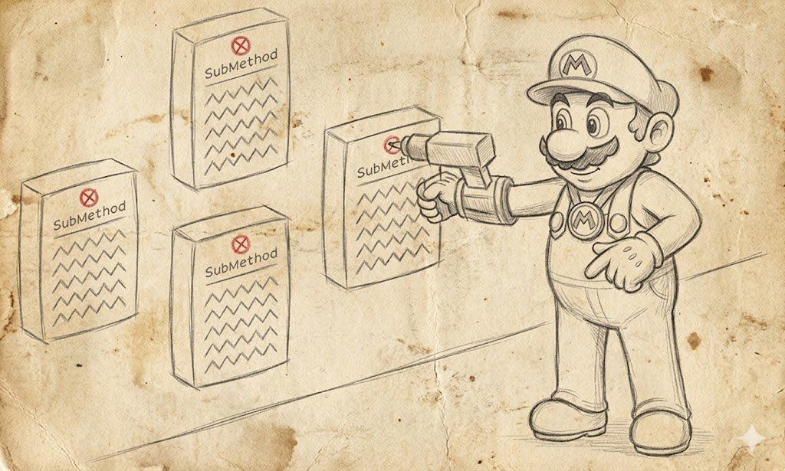
GoF, that is, the book "Design Patterns: Elements of Reusable Object-Oriented Software" by Gamma, Helm, Johnson, and Vlissides, came out in 1994 and for many years became the OOP brain of programming, and I treat it with great respect because I grew up on it myself. But the book was written thirty years ago in a very specific context that differs greatly from the modern one, and many of its recommendations either became outdated along with the languages that spawned them, or turned out specific to one family of languages and not very applicable in others.
The main criticism of GoF from game developers is that there's very little in it about real patterns. There's a lot about specific implementation and protecting already-existing code, that is, GoF is actually not a book about design patterns but a book about implementing protection from change in the style of Java and early C++. And it should be read with exactly this understanding, otherwise you'll copy into your code things that in modern game C++ are either unneeded or implemented fundamentally differently.
This shift is clearly visible in how the languages themselves changed. GoF was written in an era when programmers had new ClassName()-style instantiation scattered throughout the code, templates in C++ were still exotic, and lambdas were absent as a class. MPL and DSEL were the lot of one or two experts, while variadic templates and std::variant were stories in science-fiction magazines. In such a language many GoF patterns really were an engineering breakthrough, because they showed how to get at least some flexibility through a combination of virtual methods and inheritance. In modern C++23, Rust, C#, and Swift, much of what in GoF was a complex pattern with five classes is implemented with one lambda or one std::variant, and this must be understood so as not to breed unneeded infrastructure for the sake of unneeded infrastructure.
So GoF patterns "need to be known," in places need to be known with an understanding of the context and may not be used, and if you look into the code of modern engines, people have already walked this path, realized it, and in most cases accepted it.
Singleton: not a pattern at all
Singleton is a pattern that declares there must be exactly one instance of some class in the system and provides a global point of access to it. This sounds solid until you try to build something really big and testable on it, then it turns out that a Singleton isn't "one instance" but just a global variable with a pretty syntactic wrapper, and you'll pay for it with all the same sins for which globals were branded in the industry in the late nineties.
In 2000s games Singleton was an epidemic, and in idTech the famous engine_t engine; lived as a global engine object you could address from anywhere, and Carmack later in his public posts admitted this wasn't the best idea. In the Source Engine there were g_pStudioRender, g_pPhysicsCollision, g_pSoundEmitterSystem, and although Valve formally framed this as service providers, in practice the same singleton "one pointer for all" logic worked through them. In CryEngine the global gEnv is still one of the main architectural devices, and in Unity GameObject.Find and FindObjectOfType still live on as a "deferred singleton," and every Unity project sooner or later sets up its own GameManager with public static GameManager Instance.
The main problems of Singleton are hidden dependencies. When your code somewhere in its depths calls Engine::Get().GetRenderer().DrawSprite(), the function signature gives no clue that it depends on the renderer, on Engine, and on their lifecycle, and when you try to pull this function into a separate module or test it in isolation, you discover it drags half the engine along. Hidden dependencies lead to an initialization-order problem. It turns out Singletons call each other at initialization in an order that depends on the order of static initialization in C++. This gives the classic static initialization order fiasco, in which your engine behaves differently depending on which compiler version built the binary. And finally all this results in unsuitability for unit tests, because you can't replace a Singleton with a mock since it instantiates itself and controls access itself.
The modern industry has basically gotten over this disease, and today most engines use a hybrid Service Locator with an explicit lifetime. Unreal Subsystems (we already discussed them in the subsystems section) are an explicit acknowledgment that Singleton as an idea is needed, but it should be implemented by the engine's infrastructure with a managed lifecycle rather than a static variable in C++. Unity Dependency Injection via Zenject, Extenject, VContainer does the same, and instead of global variables you have a container into which you register services, and every piece of code gets them through the constructor or a field. Bevy ECS Resources in Rust is a different approach altogether, and a "singleton" is now just a world component to which a system requests access via Res and ResMut, and Rust at the borrow-checker level guarantees that either one mutable reference or several immutable ones has access to it at a time. All three solutions are fundamentally better than Singleton precisely because they make dependencies explicit and return control over lifetime to the programmer.
So the practical advice is this: if you see static T& Instance() in the code, don't run away screaming right away, but ask yourself "why can't this object just be a field in some parent explicitly created at the project's start." In 95% of cases it can, and the Singleton ended up there out of the author's laziness or inexperience. In the remaining 5% of cases a Singleton is genuinely justified, for example for a logger that must be accessible from any point in the code even before the engine is fully initialized, or for an allocator that must also live until the very end of the program, and these cases should be documented right in the code so the next person understands why there's a Singleton here.
Command: displaced by lambdas
Command in GoF looked like an achievement that turned logic into an object. You wrap a function call in an object that can be saved, passed, undone, and re-executed, and this object plays the role of a command in the style "execute this then, and I already know in advance how to do it." In 1994 this was "a leap for all mankind," because in old Java and old C++ passing a function as a first-class object was impossible, and Command was a way to do it and do it nicely.
Today in C++ Command is in most cases easily replaced by std::function or a lambda, because you need exactly the same effect of "packing a call and saving it for later," and for this you absolutely don't need an abstract base class with a virtual Execute() and a factory of concrete commands. C# gives the same through Action and Func. Rust through Fn, FnMut, FnOnce. Lua through first-class functions. And in all these languages, if you see code written in the style of GoF Command with a base class and descendants, it was most likely written before normal functors appeared in the language, and now it can be safely rewritten and made ten times shorter.
And when you replace 90% of commands with functors, it turns out you could have lived without them. But there are a couple of places where Command in modern form lives and thrives and will do so for a long time yet, and that's undo/redo systems in editors. When you work in Unity, Unreal, Godot, Blender, or Houdini and press Ctrl+Z, under the hood the Command pattern in its original GoF variant works, because each user action is wrapped in an object that can execute and roll itself back, and the stack of these objects is the undo history.
The same in AI planners like GOAP, because actions in a GOAP plan are precisely pure commands, where each action has Execute, IsApplicable, and preconditions with effects, and the planner assembles from them a sequence leading to the goal. In replay systems and complex AI planners, actions are the right place to apply Command objects that are written to disk, modified, saved, or re-executed in reverse order. So use lambdas and std::function where you want to "pack a call for later," but when you need undo, redo, serialization to disk, transmission over the network as an object, go for a full-fledged GoF Command with a base class, because lambdas can't do all that.
Visitor: a rigid attachment to the 90s
Visitor in GoF is a pattern that separates operations over a set of objects of different types from the objects themselves. You write a base class Visitor with methods Visit(ConcreteA*), Visit(ConcreteB*), Visit(ConcreteC*), and each of your objects has a method Accept(Visitor*) in which it calls the right visitor method. This scheme lets you add new operations to a set of types without changing the types themselves.
Visitor is a powerful idiom rigidly tied to specific languages with feedback. In Java and old C++ Visitor was a working tool, because otherwise adding a new operation to a closed set of types was either impossible or very awkward. In modern C++ there's std::variant plus std::visit for this task, in C# there's pattern matching through switch and records, in Rust there's match plus enum with algebraic types, in Swift and Kotlin there's surely something too, but I don't know these languages. All these capabilities give the same thing as Visitor, ten times shorter and without the need to breed callback infrastructure.
But the idea of Visitor itself hasn't gone anywhere, and in modern engines it shows up in various places, just named differently. For example, the idea in ECS with World.ForEach<A, B> is essentially the same Visitor turned inside out, when you declare a set of component types you want to visit, and the engine walks all entities that have these components and calls your lambda. Technically this isn't classic Visitor, because there's no feedback through a virtual method, but logically it's the same idea of "separating an operation from the types it applies to." Or shader compilers and AST transformations, when DXC or slang compile HLSL into SPIR-V, it's a classic Visitor traversal of the AST tree. The same in the Blueprint compiler in UE, which walks the graph nodes and generates commands. Even the Unreal Header Tool's code generation, which reads C++ header files with UCLASS, UPROPERTY, and UFUNCTION and generates wrapper code for them, also uses Visitor to traverse C++ files. Or scene traversal for rendering, when inside there's a Visitor traversal of all Renderer components applying the "draw" operation and collecting them into a render queue. This is Visitor, just no one calls it "Visitor" because the word has come to be perceived as academic.
Observer: poorly done in GoF
Observer in GoF is a pattern in which one object (the Subject) holds a list of observers (Observer) and on a state change notifies them all through a call to the virtual method Update(). In GoF this is described very low-level, because the classic GoF-style Observer requires base classes with virtual methods, manual management of the subscriber list, manual unsubscription in the destructor, and so on.
In modern engines Observer lives as slot-signal libraries that hide all this infrastructure behind a higher-level API. Qt signal-slot is probably the best-known implementation, and it was used in many game editors, including the early Unreal Editor and the Frostbite editor. boost::signals2 gives the same in pure C++ with automatic unsubscription via scoped_connection. MulticastDelegate in Unreal via DECLARE_MULTICAST_DELEGATE_* is a game implementation of Observer with support for UObject and automatic unsubscription when the subscriber is destroyed. UnityEvent in Unity does the same for the C# world. Signals in Godot are integrated into the node system itself and are used literally on every UI button.
But don't think the pattern is poor. From this idea grew all of reactive programming and matured into a full-fledged paradigm in the form of UniRx, UniTask, R3, which give objects that can be filtered, transformed, and combined to get the events you need. RxSwift, RxKotlin, RxJS do the same in their ecosystems. And Noesis GUI (used in The Witcher 3, Cyberpunk 2077, Baldur's Gate 3) grew into a separate software direction and applies Observer for reactive UI. That is, Observer as an idea isn't outdated at all, on the contrary, it became one of the fundamental architectural devices of modern engines. What's outdated is its original GoF implementation with virtual methods and manual subscription management. If you write an Observer-like system today, don't take it from GoF, take it from Unreal or Qt, or from modern delegate libraries, or from reactive frameworks, and treat Observer as an idea rather than a specific recipe.
Memento: alive in games even now
Memento in GoF offers a pattern in which one object can save its state into a special snapshot object and restore from it later without violating encapsulation. The description of Memento in GoF is more literary than technical, and real implementations of this pattern in games go far beyond what GoF describes.
In games Memento lives in several key places like the Save/Load system, when on saving the game all the game-world entities must serialize into a snapshot, and on loading restore from it, and this is precisely Memento, just very developed. The second habitat is Replay systems in RTS, when games (StarCraft II, Age of Empires IV, Company of Heroes 3, Civilization VI) save not every frame of the whole game's state but a deterministic sequence of players' actions plus the world's initial state, and a replay is just re-execution of this sequence with the initial snapshot. This is a very beautiful implementation of the pattern, in which the snapshot isn't the whole history but only its initial state plus the input stream, so replay files come out tiny even for multi-hour matches.
Or in certain shooters (Call of Duty, Modern Warfare, Battlefield), where the engine constantly keeps the last five to ten seconds of the world's state in a ring buffer, and on the player's death shows this recording, switching the camera to the killer. The implementation in each game is its own, but the idea is the same. Memento is also used in network fighting games (Tekken 8, Street Fighter 6, Mortal Kombat 1), when each client keeps in memory snapshots of the game's state for the last N frames, and on receiving the opponent's input rolls the state back to the needed frame in the past, re-executes from the rollback moment with the correct input, and catches up to the current frame. This requires the whole game to be deterministic and fully serializable into a snapshot in milliseconds, and implementing such a Memento in a modern fighting game is an extremely complex engineering task with thousands of person-hours invested. Undo/Redo in editors we already discussed in the Command section, but technically it's also Memento, because the undo stack stores "before" and "after" state snapshots of each action.
Facade: an approach, not a pattern
Facade in GoF is a pattern in which a complex subsystem is hidden behind a simplified facade interface through which it's used exclusively. Facade describes not a specific code structure but the architectural decision "let's hide this complexity behind a simpler interface," and it's not implemented specially in any way, it just appears as a side effect of good design.
In games Facade is encountered at every step but isn't called by this word. The boundary between Engine and Game in Unreal, Unity, and any other engine is a Facade over the engine code. The API in the Steamworks SDK is a Facade over complex server interactions with Steam. The Wwise or FMOD API is a Facade over a complex audio infrastructure. The physics-engine API (PhysX, Havok, Box2D, Bullet, Jolt) is a Facade over a million lines of physics computations. The graphics-engine API (Vulkan, DX12, Metal) is a Facade over the GPU driver, which is itself a Facade over the hardware. This isn't a pattern in the sense of "take this specific structure and use it," it's the general idea of "hide complexity behind a simplified interface" that underlies all good API design. So Facade lives everywhere in the industry, but there's basically no need to discuss it as a separate pattern, because any normal module should have a simplified external interface anyway.
What you must know by heart
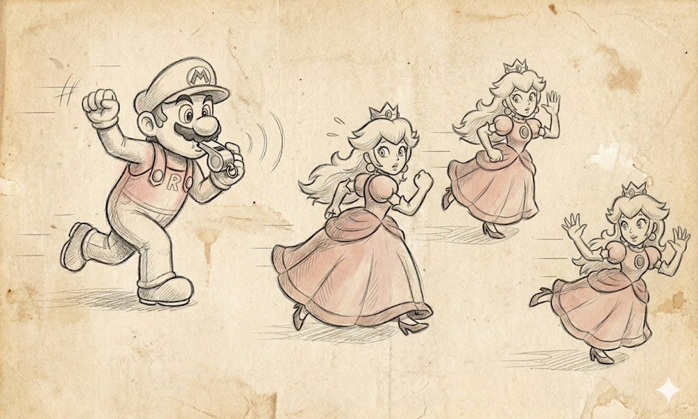
From GoF you really need to remember and know the structural and creational patterns well, because you'll implement them on every project, and they haven't gone anywhere with the arrival of modern languages. Abstract Factory lives in VFS providers, where each file format has its own factory, in render backends (IRenderBackendFactory creates DX12Backend, VulkanBackend, MetalBackend), in network transports (INetworkTransportFactory creates TCPTransport, UDPTransport, WebRTCTransport), and in AI planners (a factory creates GOAPPlanner, BehaviorTreePlanner, TNPlanner). This is a completely living pattern that comes in handy every time you have a family of related objects with different implementations.
Builder lives in character-creation systems (CharacterBuilder assembles a hero from race, class, equipment, skills), in level generators (DungeonBuilder assembles a level from rooms, corridors, traps), in mesh builders for procedural geometry, in shader builders, in command-list builders for rendering. Prototype lives in prefab systems (Instantiate(prefab) in Unity, SpawnActor(class, transform) in Unreal, instance in Godot), in operations for copying objects, in procedural generation (take an enemy prototype and parameterize it). It's one of the most basic and frequently used patterns in games.
Adapter lives in wrappers over third-party libraries, when you integrate an external SDK with one API into your engine with another API and write an adapter. In input systems that adapt different gamepad formats (XInputAdapter, DualShockAdapter, SteamInputAdapter) to a single IGamepad interface. In legacy wrappers, when new engine code works with a new API while old code through an adapter keeps working with the deprecated API. Bridge in its pure form is rare, but its idea of "separating abstraction and implementation" underlies any good API. The Render Hardware Interface in Unreal (Engine vs RHI vs RHI implementation for each API) is exactly Bridge. The audio backend abstraction in Wwise (Sound Engine vs platform-specific audio backend) too.
Composite is one of the most popular patterns in games, because any hierarchical structure is Composite. Scene Graph in Unity (Transform.parent + children), AActor + USceneComponent in Unreal, Node hierarchy in Godot — all of this is Composite. Behavior Trees are Composite over behavior nodes. UI hierarchies through container widgets. Render Graph through a group of passes. Proxy lives in deferred execution and loading (AssetProxy loads the real asset only on first access), in network clients (RemoteServiceProxy represents the server locally), in caches (CachingProxy remembers the results of accesses). Flyweight is one of the patterns most characteristic of games, because games constantly have thousands of same-type objects with a lot of shared data. A Particle System via Flyweight keeps a shared emitter descriptor and thousands of lightweight particles sharing its data. Mesh instancing in the GPU is Flyweight: one geometry and thousands of transforms.
If we try to formulate a practical approach to GoF in modern game C++, it looks roughly like this. The structural and creational patterns (Factory, Builder, Prototype, Adapter, Bridge, Composite, Decorator, Proxy, Flyweight) must be known by heart, because they haven't gone anywhere and help every day. The behavioral patterns (Command, Observer, Strategy, Visitor, Memento, State, Mediator, Iterator, Chain of Responsibility) must be known in terms of how they work, but don't get attached to the implementation, because modern languages give for each of them far more elegant means of execution than GoF could afford. Singleton — it's time to bury the stewardess already... And Facade understand as a principle, not as a pattern.
It's useful to know GoF patterns in blocks, that is, Factory + Builder + Prototype is the "object creation" block, and it makes sense to think of it as a single task — how do we create things in this game at all — rather than as three separate patterns. Adapter + Bridge + Facade is the "API adaptation" block, and it makes sense to think of it as the question of how we isolate different parts of the system from each other. Observer + Mediator + Chain of Responsibility is the "communication between objects" block, and so on. When you think in blocks, you see the architecture, and when you think in separate patterns, you see only implementation details, while the architecture itself escapes you.
After thirty years GoF has become a historical document of the early-OOP era, and it should be treated the same as old engineering literature. Much of what's written there is relevant today, but much requires revision in light of the development of languages and the industry. A programmer who read GoF in 2026 and tries to reproduce its recipes literally looks roughly like a programmer in 1994 trying to follow books on structured programming from 1974. You'll of course get working code, but it'll be archaic code in which half the effort is spent on what in a modern language is solved with one line. But a programmer who read GoF and took the main thing from it, that is, the idea of naming and discussing patterns at all, gets a vocabulary for talking with the tech lead that pays off every time you need to explain what you did and why.
What to read in the end
Since GoF appeared, a lot of useful material has come out, and if you find yourself at the start of your career or just decided to close gaps in architecture, below is a list of literature I've read myself and can recommend.
POSA (Pattern Oriented Software Architecture). This is the most important book, because POSA isn't GoF — it really contains the real architectural patterns of the level we discussed above: Layers, Pipes and Filters, Blackboard, Microkernel, Broker, Reflection. Volume I is the basic general-purpose architectural patterns, and without it I wouldn't consider a person to have finished learning software architecture at all.
GoF (Design Patterns) by Gamma, Helm, Johnson, and Vlissides. I've already covered it in detail; you need to know it, you may read it, the structural and creational ones it's good to memorize, the rest take in measured doses with an understanding of the historical context. Not Holy Scripture, but a historical document from the age of mammoths.
Booch, Object-Oriented Analysis and Design with Applications. The book is outdated in its examples (C++ from the 90s, Smalltalk, Ada), but methodologically very sound, and there the author gives a good conceptual apparatus for domain analysis. Today it's like Roger Zelazny with his Amber Chronicles — wildly interesting, but more for general development than for applied work.
Fowler, Refactoring. This book is a must-read, and read it in the current second edition (2018) or later if available, because its examples are in JavaScript and more modern. The main benefit isn't in refactoring as such, but in Fowler giving a vocabulary for talking about awkward code: extract method, inline variable, replace conditional with polymorphism. When this becomes a shared vocabulary in your team, the speed of code review grows several-fold.
Lakos, Large-Scale C++ Software Design. This is required reading for any C++ developer, and Lakos at the time described how to structure large C++ projects so they compile and link in a reasonable time. His recommendations on physical design, dependency hierarchies, the pImpl pattern, forward declarations still save projects from collapsing under their own weight.
"Game Programming Patterns" by Robert Nystrom (available free at gameprogrammingpatterns.com). This is essentially a game remake of GoF, and the author clearly set such a goal when writing the book. He takes each GoF pattern plus game-specific ones (Game Loop, Update Method, Component, Event Queue, Service Locator, Data Locality, Dirty Flag, Object Pool, Spatial Partition, Type Object, Subclass Sandbox, Bytecode), gives game context and game examples, and writes it in very accessible language. If you write game code, this is the first book you should read, and it's available free online.
"Game Engine Architecture" by Jason Gregory. This is the most complete book on game-engine architecture, written by the person who was in charge of Naughty Dog's engine. Any edition covers practically all aspects, and if you're writing something resembling a game, it's required reading. "Software Engineering at Google" is a modern "Lakos" for big projects, and it analyzes in detail how to build processes around code, testing, code review, dependency management, build systems, and much of this is directly applicable in big game projects. I have a strong feeling that most AAA studios have never heard of it at all.
GDC Vault (gdcvault.com). A huge archive of GDC talks, partly paid, partly free. I'd single out a few key talks that are must-watches:
- Jason Gregory on "State-Based Scripting in Uncharted 2" (2009).
- Christian Gyrling on "Parallelizing the Naughty Dog Engine Using Fibers" (GDC 2015).
- Damián Isla on "Handling Complexity in the Halo 2 AI" (GDC 2005).
- Jeff Orkin on "Three States and a Plan: The AI of F.E.A.R." (GDC 2006).
- Yuriy O'Donnell on "FrameGraph: Extensible Rendering Architecture in Frostbite" (GDC 2017).
- Tim Sweeney on "Programming the Future" in various years.
- Michael Acton on "Data-Oriented Design and C++" (CppCon 2014, not GDC, but a must).
- Niklas Frykholm on "Implementing Subsystems" in the Bitsquid/Stingray engine architecture.
YouTube channels I'd recommend: The Cherno for basics of C++ and engine architecture; Game Dev Underground for interviews with indie developers; the official GDC channel with free talks; CppCon for in-depth C++.
Blogs of specific developers. This is a gold mine, and everyone who reads them has a completely different level of understanding in a year. John Carmack .plan files (a historical archive, but very instructive); Casey Muratori and his Handmade Hero series; Mike Acton and his articles on data-oriented design; Sebastian Sylvan and his blog; Aras Pranckevičius (former Unity CTO) and his blog; Branimir Karadžić (author of bgfx); Adrian Courrèges on frame breakdowns in modern games; Wolfgang Engel (diary of a graphics programmer).
Open-source engines and their code. This is probably the best way to learn architecture. id Tech 1-4 (sources available), Doom 3 BFG, Quake III Arena, Half-Life 1, Unreal Engine 3-5 (for developers), Godot, Bevy, EnTT, flecs, bgfx, The Forge. Reading the sources of these projects gives more understanding of architecture than ten textbooks.
What and in what order to read today
If you're just starting out and have a year for self-education, I'd propose this plan:
- Game Programming Patterns (Nystrom) for basic vocabulary and a first acquaintance with patterns in games. 2 months + do the examples.
- GoF for academic grounding, can be skipped. A month.
- POSA Volume I for real architectural patterns. Two months.
- Game Engine Architecture (Gregory) for the general engine picture. Three months, with experiments.
- Refactoring (Fowler) for the ability to work with existing code. A month.
- Real-Time Rendering (if you're a graphics programmer) or Real-Time Collision Detection (if a physics one) or POSA Volume II (if a network one) for specialization. Two months.
- Large-Scale C++ Software Design (Lakos) for understanding a large C++ project. Two months, especially if you work in a big team.
- Designing Data-Intensive Applications (Kleppmann) for general development. A month and a half.
- Peopleware (DeMarco/Lister) for understanding that you work with people, not machines. Two weeks, very short.
In parallel with this, at least one GDC talk a week, at least one technical blog post a day, and at least one pull request to an open-source project a week. But most importantly, no book replaces writing code. All these books become useful at exactly the moment when you read them after encountering the problem they describe. If you read Lakos before your big project's compilation started taking an hour, his recommendations will remain just words on paper. If you read POSA Volume II before you had a real task with asynchronous code, the Reactor and Proactor patterns will seem like a useless academic abstraction. So read into the problem, not ahead, and keep this library on hand so that when a problem arises you quickly find the right section and apply it to a fresh case.
TL;DR
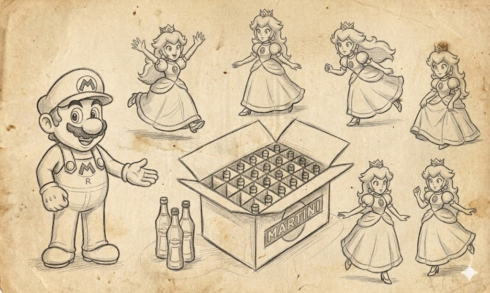
Phew... you made it here, well, was it interesting? )
If we try to boil everything written above into one page you can return to in a year and quickly refresh the main points, you get roughly the following.
A game's architecture isn't a question of "what's cooler" but of which compromises you're willing to pay for which advantages, and without an honest answer to this question any "correct" architecture turns into an expensive ornament that gives the project nothing.
The first thing you must find out about your project is its scale (one person or two hundred), who will make changes (programmer, designer, artist, localizer), how frequent these changes are (every day or once every six months), which forces you're willing to maintain (cohesion, coupling, iteration speed, native-code speed, onboarding speed for new people, ABI stability for external developers). About nine tenths of the architectural decisions you'll then make depend on the answers to these questions; there are no "general" correct answers.
The "big" architectural patterns give you a vocabulary for talking about the organization of the codebase. Where you have layers, where subsystems, and where metalayers, and so on, and most projects are a mix of all with all, and a conscious mix rather than a random one.
Design strategies determine from which end you lay the bricks: top-down works with a strong design and a big team, bottom-up works with a unique technology and a small core group, constant refactoring works with prototypes and indie teams, and switching between them by project phases is normal, not a sign of weakness.
The push vs pull axis determines who is responsible for data currency. Pull is cheaper in infrastructure and spreads across the code, push is more expensive, but the system knows WITHOUT YOU where to look for what. In modern games asset streaming, settings with side effects, reactive UI, network replication, and AI perception are usually push; gameplay rules, math utilities, immediate-mode UI, and the hot path are usually pull; most engines are a hybrid in which cvars and asset references give you a choice between a push subscription and a pull read.
Data-driven design isn't "how to program cooler," it's a way to bring new specialties into the project, primarily non-programmer ones. If there's one person on your project, extensive data-driven is contraindicated; if you have a dozen game designers and a technical-art team, without data-driven you won't be able to load them with work.
Scripting languages exist not for programmers but for non-programmers, and the ideal script for non-programmers is anything but a script. In most cases the right answer is either a specialized visual DSL (Blueprints, Behavior Tree, Material Editor, Niagara, Sequencer), or a general-purpose language like Lua or C# wrapped in a non-programmer-friendly interface. It's incredibly tempting for a freshman programmer to make a "convenient scripting language," but this language's convenience always turns out to be the programmer's own convenience rather than the game designer's, and in two years you'll be writing all the script code in it yourself, because the game designers found it inconvenient two years ago and find it no more convenient now.
Resource and asset management distinguishes two fundamentally different things: an asset is a unit of content, a resource is a unit of a limited physical resource (a VRAM page, a descriptor, a thread). Caching works with identity (textures by name), pooling with anonymized resources (a bullet pool), prefetching and streaming pull in advance what will be needed, lazy and partial acquisition pull only what's needed, leasing temporarily issues and takes back, an evictor decides whom to throw out, a coordinator maintains coherence. Most modern open-world games are a complex bundle of all these patterns, and an attempt to get by with simple techniques usually ends in either an OOM or stutters on loading.
GoF is useful; the structural and creational patterns (Factory, Builder, Prototype, Adapter, Bridge, Composite, Decorator, Proxy, Flyweight) know by heart and apply regularly. The behavioral patterns (Observer, Command, Strategy, State, Visitor, Memento, Chain of Responsibility, Iterator, Mediator) know in essence, but implement through modern language idioms. Don't use Singleton without an explicit necessity. Understand Facade as a principle, not a pattern. GoF is a historical document, treat it accordingly.
Patterns are a vocabulary for discussing architectural compromises, not a catalog of recipes and not a textbook on "how to do it right." They're useful at exactly the moment when two engineers, a tech lead and a game designer, or you and you-in-six-months, sit down to discuss what was done in the code and why, and speak a common language. Without this vocabulary architectural discussions turn into an hour of improvisation with a marker at the whiteboard, while with the vocabulary they're three times shorter and ten times more productive.
And the most important thing I want to say at the very end, after all these many thousands of words, dissected patterns, and game examples. Architecture isn't an end in itself but a tool. The goal is a game that's fun to play, and the architecture must serve this goal rather than the other way around. A programmer who chooses patterns based on their beauty or conformance to books is a bad programmer, because they work for their library rather than for the project. A programmer who chooses patterns based on the specific forces of a specific project and consciously accepts compromises is a good programmer, and the games they make pay back everything in the long run, because they ship, reach release, please players, and bring the team both pleasure and money.
And this is exactly the thought I failed to convey in my book Game++, because in it I got too carried away with implementations and said too little about compromises, and that's exactly why I took up this article, to try to fix this mistake. A programmer's time is more important than implementations, and an architect who starts the conversation with factories isn't much of an architect yet. I'd add from myself that an architect who ends the conversation without discussing forces and compromises isn't much of an architect yet either, and it's good to hang this phrase over your desk, because there's always a temptation to finish earlier. A good architect is the one who doesn't give in to this temptation, and I very much hope this article helped the reader move at least a little in that direction.
Thank you for reading. If you correct me somewhere on the factual details of specific engines and projects, I'll be grateful. If you object on the substance, I'll be even more grateful, because the main benefit of an article like this is to provoke a quality argument. See you in the next articles, and maybe new books too.
A draft of the next book is partly posted on GitHub, based on the Habr articles (playful_programming_cpp); in general the book itself is already written, and I post interesting chapters from it as articles. P.S. The lead images are taken from the wonderful site refactoring.guru with their permission and slightly touched up with a file.
← All articles